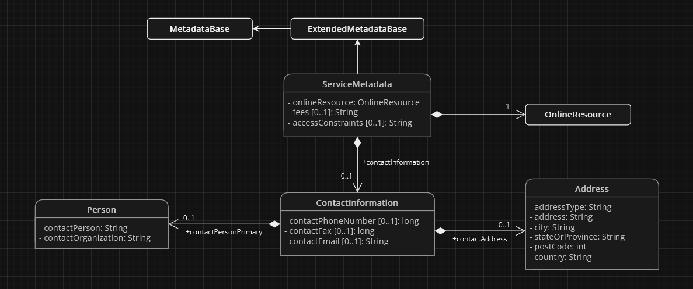

Projektowanie Aplikacji
Praca Kreatywna Autorstwa Krystiana Wiecheć 2AP
Wstęp
W tej pracy przedstawię wiele pojęć i zasad związanych z programowaniem oraz informatyką. Omówione zostaną następujące tematy:
- Zasady Clean Code - zasady tworzenia kodu, który jest czytelny oraz łatwy w utrzymaniu.
- Zasady Programowania Obiektowego - zasady tworzenia wysokiej jakości programów obiektowych.
- Dokumentowanie Kodu - sposób opisywania kodu w celu ułatwienia jego zrozumienia i utrzymania.
- Algorytm - zestaw instrukcji, które określają sposób rozwiązania problemu.
- Projektowanie Klas - sposób tworzenia obiektów, które są ze sobą powiązane w logiczny sposób.
W całej pracy obecne są przykłady kodu, schematy, diagramy, tabele porównujące, zdjęcia, animacje oraz filmy.
Strona posiada funkcje wyszukiwania oraz różne motywy dostępne u góry strony.
Jest również przystosowana do działania z urządzeniami mobilnymi. Polecam sprawdzić, ale tak na wypadek gdyby Panu się nie chciało i tak dam screena, żeby to udowodnić.
Miłego czytania!
Zasady Clean Code
Zasady clean code lub po prostu czysty kod, to zasady oraz wytyczne, dotyczące pisania kodu, który jest łatwy do zrozumienia, utrzymania i modyfikacji. Kładą nacisk na prostotę, czytelność i klarowność, dążąc do stworzenia kodu, który jest samowystarczalny i minimalizuje ryzyko błędów.
"Każdy głupiec może napisać kod zrozumiały dla komputera. Dobrzy programiści piszą kod zrozumiały dla ludzi." – Martin Fowler
Cel
Dzięki stosowaniu zasad clean code, tworzymy kod który jest:
- klarowny i czytelny - taki kod jest łatwy do zrozumienia dla innych programistów, którzy mogą w przyszłości z nim pracować.
- efektywny - jest wydajny i używa jak najmniejszej ilości zasobów systemowych, aby nie obciążać sprzętu oraz aby mógłby być używany w bardziej ekstremalnych warunkach sprzętowych.
- testowalny - powinien być łatwy do testowania, aby można było zapewnić jego poprawne, przewidziane oraz zaplanowanie działanie.
- utrzymywalny - łatwy do modyfikowania i rozszerzania, aby można było go bez trudu aktualizować, ulepszać, wzbogacać o nowe funkcje oraz dostosowywać do zmieniających się wymagań.
Podstawowe Zasady
Najbardziej kluczowe zasady clean code to:
- Keep it simple, stupid! - pisz prosty, nie skomplikowany kod.
- Don't repeat yourself - unikaj powtórzeń.
- You ain't gonna need it - nie pisz kodu, którego nie potrzebujesz w aktualnym momencie.
- Stick to naming conventions - stosuj się do konwencji nazewniczych języka.
- Fail fast - gdy wystąpi problem, zakończ natychmiast.
- Code as documentation - pisz kod który jest czytelny i tłumaczy sam siebie.
- Read the fricking manual - jeśli masz pytanie, sprawdź dokumentacje oraz internet przed zadaniem go.
- Test-driven development - na bierząco testuj swój kod.
- Rubber duck debugging - zasada pomagająca w debugowaniu kodu.
Podsumowanie
Pisanie czytego kodu wymaga czasu i praktyki lecz każdy programista powinien znać te zasady i stosować je w swojej pracy. Dzięki temu będzie mógł pisać kod, który jest wysokiej jakości, łatwy w utrzymaniu i modyfikowaniu oraz bezproblemowo czytelny dla innych.
Keep It Simple, Stupid! (KISS)
Keep it simple, stupid! czyli po polsku nie komplikuj, głupcze! lub w skrócie KISS, to jedna z najważniejszych i najbardziej podstawowych zasad clean code. Mówi ona, że rozwiązania powinny być jak najprostsze, ponieważ im coś jest prostsze, tym łatwiej jest to zrozumieć. Oznacza to że w kodzie powinno się unikać trudnych do zrozumienia i dalszego eksploatowania rozwiązań.
Pochodzenie

Wbrew pozorom zasada ta nie została pierwotnie stworzona z myślą o programowaniu. Została ona sformułowana przez amerykańskiego wojskowego inżyniera lotnictwa Kelly'ego Johnsona w latach 60-tych, a jej przekazem miało być tworzenie samolotów w tak prosty sposób, aby każdy nawet najmniej uzdolniony mechanik mógł je naprawić w każdych, nawet najcięższych warunkach takich jak polowe oraz przy użyciu najbardziej podstawowych narzędzi.
Zalety
KISS ma wiele zalet, w tym:
- zwiększa czytelność kodu - prosty kod jest łatwiejszy do zrozumienia, zarówno dla programistów, jak i dla użytkowników końcowych.
- ułatwia utrzymanie kodu - prosty kod jest łatwiejszy do modyfikacji i rozszerzania, bez wprowadzania błędów.
- ułatwia testowanie kodu - prosty kod jest łatwiejszy do przetestowania, aby upewnić się, że działa poprawnie.
- zwiększa wydajność kodu - prosty kod jest bardziej wydajny niż kod złożony.
- zwiększa bezpieczeństwo kodu - prosty kod jest często bardziej bezpieczny niż kod złożony, ponieważ gdy jest mniej kodu, istnieje mniejsze prawdopodobieństwo popełnienia błędu.
Metody Stosowania
Podstawowe metody stosowania zasady KISS to:
- dziel duże zadania na mniejsze, bardziej przystępne zadania - im mniejsze zadanie, tym łatwiej je zrozumieć i wykonać.
- używaj prostych, sprawdzonych rozwiązań - nie próbuj wymyślać koła na nowo. Jeśli istnieje proste rozwiązanie, które działa, użyj go.
- unikaj skomplikowanych algorytmów i struktur danych - jeśli możesz osiągnąć ten sam wynik za pomocą prostszego rozwiązania, użyj go.
- używaj jasnego i czytelnego języka - kod powinien być łatwy do zrozumienia dla innych programistów.
Przykład Zastosowania
Oto przykładowy kod napisany w języku Python, który prezentuje wyniki zastosowania metody KISS. Kod ten porównuje dwie liczby, po czym wyświetla informacje która jest większa od której lub czy są sobie równe.
Przed Zastosowaniem
Kod przed zastosowaniem metody KISS:
a = 10
b = 20
if a > b:
print("a jest większe od b")
else:
print("b jest większe od a")
if a < b:
print("a jest mniejsze od b")
else:
print("b jest mniejsze od a")
if a == b:
print("a jest równe b")
else:
print("a nie jest równe b")
Wynikiem uruchomienia tego kodu jest:
b jest większe od a
a jest mniejsze od b
a nie jest równe b
b jest większe od a to logicznym jest że a jest mniejsze od b oraz a nie jest równe b, te informacje wywołują nie potrzebny bałagan w kodzie oraz w wyniku programu.
Po Zastosowaniu
Tak natomiast wygląda kod po zastosowaniu w nim zasady KISS:
def compare(a, b):
if a == b:
print("a jest równe b")
elif a > b:
print("a jest większe od b")
else:
print("b jest większe od a")
compare(10, 20)
Wynikiem uruchomienia tego kodu jest:
b jest większe od a
Od razu widocznym jest że sam kod jest krótszy, oraz pozbyliśmy się nie potrzebnych informacji z wyniku jego działania. Kod został przekształcony tak aby porównanie było wykonywane jednym blokiem instrukcji warunkowej zamiast trzema, a instrukcja warunkowa została umieszczona w funkcji compare, co na dodatek pozwala na użycie tego porównania w innych miejscach w kodzie bez potrzeby powtarzania całej instrukcji warunkowej.
Podsumowanie
Zasada KISS jest prosta, ale potężna. Zasada ta nie jest nakazem lecz stosowanie tej pomaga w tworzeniu lepszego kodu, ale także produktów i usług, które są łatwiejsze w użyciu i utrzymaniu.
Don't Repeat Yourself (DRY)
Don't repeat yourself czyli po polsku nie powtarzaj się lub w skrócie DRY, to również jedna z najważniejszych i najbardziej podstawowych zasad clean code. Mówi ona, że powinniśmy unikać powtórzeń w kodzie, gdyż zwiększają one nie potrzebnie ilość kodu, co sprawia że jest mniej czytelny i trudniejszy w eksploatowaniu. Powtarzający się kod może również prowadzić do błędów, gdy zostanie zmodyfikowany w jednym miejscu, ale nie w innych.
Zalety
DRY ma wiele zalet, w tym:
- zwiększa czytelność kodu - kod, który nie zawiera powtórzeń, jest łatwiejszy do zrozumienia i utrzymania.
- ułatwia utrzymanie kodu - zmiana kodu, który nie zawiera powtórzeń, jest łatwiejsza, ponieważ nie trzeba zmieniać kodu w wielu miejscach.
- upraszcza testowanie kodu - kod, który nie zawiera powtórzeń, jest łatwiejszy do przetestowania, ponieważ nie trzeba testować kodu w wielu miejscach.
- pozwala uniknąć błędów - spowodowanych zmianą powtarzającego się kodu w jednym miejscu, lecz nie w innych.
Metody Stosowania
Podstawowe metody stosowania zasady DRY to:
- używaj funkcji i metod - rozdzielaj powtarzający się kod na funkcje i metody. Pozwala to w łatwy sposób wywoływać wiele razy z róznych miejsc w programie ten sam blok kodu bez potrzeby powtarzania go.
- używaj bibliotek i frameworków - są one gotowymi zbiorami funkcji, klas, itp. które można wykorzystać do tworzenia programu. Eliminuje to potrzebe pisania niektórych części kodu samemu co może wyeliminować też problem powtórzeń.
Przykład Zastosowania
Oto przykładowy kod napisany w języku Python, który prezentuje wyniki zastosowania metody DRY. Kod ten wyświetla przywitanie z trzema różnymi osobami.
Przed Zastosowaniem
Kod przed zastosowaniem metody DRY:
print("Witaj, Ania!")
print("Witaj, Karol!")
print("Witaj, Laura!")
Wynikiem uruchomienia tego kodu jest:
Witaj, Ania!
Witaj, Karol!
Witaj, Laura!
Po Zastosowaniu
Tak natomiast wygląda kod po zastosowaniu w nim zasady DRY:
def greeting(name):
print(f"Witaj, {name.capitalize()}!")
greeting("ania")
greeting("karol")
greeting("laura")
Wynik uruchomienia tego kodu jest identyczny jak przed zastosowaniem zasady.
Pomimo tego że wynik działania kodu jest taki sam, oraz ilość kodu minimalnie się zwiększyła, zastosowanie tej zasady w tym kodzie nadal zmniejsza prawdopodobieństwo wystąpienia późniejszych błędów. Gdybyśmy chcieli zmienić treść wiadomości witającej osobe, nie musimy już zmieniać jej w trzech różnych miejscach w kodzie tylko w jednym, ponieważ stworzyliśmy funkcję greeting która przyjmuje imię jako parametr i to ta funkcja wyświetla przywitanie.
Podsumowanie
Zasada DRY również jest prosta, ale znacząca. Tak jak poprzednia zasada nie jest nakazem lecz przyczynia się do tworzenia kodu w którym istnieje mniejsze prawdopodobieństwo wystąpienia błędów oraz jest czytelniejszy i krótszy.
You Ain't Gonna Need It (YAGNI)
You ain't gonna need it czyli po polsku nie będziesz tego potrzebował lub w skrócie YAGNI, to także jedna z najbardziej podstawowych zasad clean code. Zakłada ona, że nie powinniśmy pisać tak zwanego martwego kodu (dead code) czyli kodu który jest po prostu nie używany.
Zalety
Jedne z wielu zalet stosowania YAGNI to:
- mniej zaśmiecony kod - nie piszemy kodu o którym możemy później zapomnieć.
- zwiększa czytelność i klarowność kodu - kod, który nie zawiera funkcji lub możliwości, których nie potrzebujemy, jest łatwiejszy do zrozumienia.
- zwiększa wydajność kodu - kod, który nie zawiera funkcji lub możliwości, których nie potrzebujemy, jest bardziej wydajny.
Metody Stosowania
Podstawowe metody stosowania zasady YAGNI to:
- przemyśl dobrze swoje potrzeby - zanim zaczniesz implementować nową funkcję lub klasę, zastanów się, czy naprawdę jej potrzebujesz. Czy jest to konieczne do wykonania określonego zadania?
- pisz tylko ten kod którego potrzebujesz w aktualnym momencie - nie pisz kodu którego będziesz potrzebował później, napiszesz go wtedy gdy będziesz go potrzebował.
Przykład Zastosowania
Oto przykładowy kod napisany w języku Python, który prezentuje wyniki zastosowania metody YAGNI.
Przed Zastosowaniem
Kod przed zastosowaniem metody YAGNI:
def sum(a, b):
return a + b
def sub(a, b):
return a - b
print(sum(5, 8))
Wynikiem uruchomienia tego kodu jest:
13
Po Zastosowaniu
Tak natomiast wygląda kod po zastosowaniu w nim zasady YAGNI:
def sum(a, b):
return a + b
print(sum(5, 8))
Wynik uruchomienia tego kodu jest identyczny jak przed zastosowaniem zasady.
Jedyna rzecz jaka zmieniła się po zastosowaniu metody YAGNI, to usunięcie funkcji sub z kodu. Usunięcie tej funkcji nastąpiło dlatego, gdyż była ona po prostu nie używana co sprawiało ją bezużyteczną i zaśmiecającą kod.
Podsumowanie
Zasada YAGNI to kolejna banalna ale ważna zasada. Pozwala na pisanie krótszego kodu który jest pozbawiony nie używanych funkcji i innych nie używanych elementów.
Stick To Naming Conventions (STNC)
Stick to naming conventions czyli po polsku trzymaj się konwencji nazewniczych lub w skrócie STNC, to bardzo prosta i krótka zasada clean code. Mówi ona, że powinniśmy trzymać się konwencji nazewniczych ustalonych przez twórców danego języka. Oznacza to że nazywając funkcje, klasy i inne elementy kodu, powinniśmy stosować konwencje nazewnicze języka z którego korzystamy.
Konwencje nazewnicze oraz poradniki dotyczące stylu zawsze znajdziemy w dokumentacji języka programowania. Przykładowo, dla Pythona możemy znaleźć je tutaj.
Zalety
Przykładowymi zaletami stosowania STNC są:
- ułatwia współpracę z innymi programistami - konwencje nazewnicze pomagają zapewnić, że kod napisany przez różnych programistów jest spójny i łatwy do zrozumienia.
- zwiększa czytelność kodu - nazwy, które są zgodne z konwencjami nazewniczymi, są łatwiejsze do zrozumienia, zarówno dla programistów, jak i dla użytkowników końcowych.
Przykład Zastosowania
Oto przykładowy kod napisany w języku Python, który prezentuje wyniki zastosowania metody STNC.
Przed Zastosowaniem
Kod przed zastosowaniem metody STNC:
My_Name = "adam"
def capitalizeName(Name):
return Name.capitalize()
Po Zastosowaniu
Tak natomiast wygląda kod po zastosowaniu w nim zasady STNC:
my_name = "adam"
def capitalize_name(name):
return name.capitalize()
Po zastosowaniu metody STNC zmieniły się nazwy zmiennych i funkcji w kodzie. Python używa snake case do nazewnictwa zmiennych i funkcji, dlatego ta zmiana była wymagana aby była zgodna z konwencjami. Zmiana ta nie zmieniła sposobu działania programu, lecz poprawiła czytelność i klarowność kodu.
Podsumowanie
Zasada STNC to prawdopodobnie najprostsza ze wszystkich zasad. Sprawia że pisany przez nas kod będzie łatwiej zrozumiały dla innych programistów, co pomaga w współpracy oraz zrozumieniu się nawzajem.
Fail Fast (FF)
Fail fast czyli po polsku szybka awaria lub w skrócie FF, to również bardzo prosta i krótka zasada clean code. Mówi ona, że program po otrzymaniu nie prawidłowych danych lub wystąpieniu błędu powinien natychmiast zakończyć swoje działanie.
Zalety
Jednymi z wielu zalet stosowania FF są:
- zwiększa niezawodność programu - program, który zgłasza błędy szybko, jest mniej podatny na uszkodzenie danych lub nieoczekiwane zachowanie.
- ułatwia debugowanie programu - gdy program zgłasza błąd szybko, programista może łatwo zlokalizować źródło błędu.
Metody Stosowania
Podstawowe metody stosowania zasady FF to:
- sprawdzaj poprawność podanych danych - sprawdzaj poprawność każdej danej pobranej od użytkownika, jeśli jest nie poprawna, zakończ działanie.
- używaj warunków - sprawdzaj poprawność zmiennych i innych danych instrukcjami warunkowymi.
Przykład Zastosowania
Oto przykładowy kod napisany w języku Python, który prezentuje wyniki zastosowania metody FF.
Przed Zastosowaniem
Kod przed zastosowaniem metody FF:
result = input("Wpisz `tak` lub `nie`: ")
Po Zastosowaniu
Tak natomiast wygląda kod po zastosowaniu w nim zasady FF:
result = input("Wpisz `tak` lub `nie`: ")
if result != "tak" AND result != "nie":
print("Nie prawidłowa odpowiedź")
exit()
Zastosowanie metody FF zmieniło to, że gdy zostanie podana inna wartość niż tak lub nie program wyświetli informacje o nie prawidłowej odpowiedzi i zakończy swoje działanie. Nie będzie kontynuował działania z nieprawidłowymi informacjami.
Podsumowanie
Więcej o Fail Fast na przykładzie Javy możesz dowiedzieć się z artykułu SoftwareSkill.
Zasada FF jest bardzo ważną zasadą jeśli chodzi o bezpieczeństwo. Dzięki niej, tworzymy program, który jest w stanie rozpoznać nieprawidłowe informacje i odrzucić je a nie kontynuować swoje działanie z nieprawidłowymi danymi i spowodować potencjalne szkody.
Code as Documentation (CaD)
Code as documentation czyli po polsku kod jako dokumentacja lub w skrócie CaD, to zasada clean code dotycząca komentowania kodu. Mówi ona, że kod powinien być sam w sobie zrozumiały, a komentarze powinny wyjaśniać dlaczego a nie co. Znaczenie tej zasady jest takie, że powinniśmy pisać kod który jest prosty w zrozumieniu.
"Kod powinien być taki, że po przeczytaniu go wiemy w jaki sposób działa. Komentarze powinny wyjaśniać dlaczego tak działa i jakie jest jego użycie, a nie to jak działa." - Bard AI by Google
Zalety
Przykładowymi zaletami stosowania CaD są:
- zwiększa wydajność pracy - kod, który jest napisany w sposób ułatwiający jego zrozumienie, pozwala programistom skupić się na pisaniu kodu, a nie na czytaniu dokumentacji.
- zwiększa czytelność kodu - kod, który jest napisany w sposób ułatwiający jego zrozumienie, jest łatwiejszy do utrzymania i rozszerzania.
- ułatwia współpracę z innymi programistami - kod, który jest napisany w sposób ułatwiający jego zrozumienie, jest łatwiejszy do zrozumienia przez innych programistów.
Metody Stosowania
Podstawowe metody stosowania zasady CaD to:
- używanie opisowych nazw zmiennych i funkcji - nazwy, które opisują, co zmienne lub funkcje reprezentują, ułatwiają zrozumienie kodu.
- używanie struktur danych i algorytmów, które są dobrze znane - struktury danych i algorytmy, które są dobrze znane, są łatwiejsze do zrozumienia.
- używanie konwencji nazewnictwa - konwencje nazewnictwa pomagają zachować spójność kodu i ułatwiają jego zrozumienie.
Przykład Zastosowania
Oto przykładowy kod napisany w języku Python, który prezentuje wyniki zastosowania metody CaD.
Przed Zastosowaniem
Kod przed zastosowaniem metody CaD:
def tomato(a, b):
return a / b
tomato() w żaden sposób nie przedstawia działania tej funkcji.
Po Zastosowaniu
Tak natomiast wygląda kod po zastosowaniu w nim zasady CaD:
def divide(a, b):
return a / b
Nazwa funkcji tomato() została zamieniona na divide(), teraz od razu wiadomo, że funkcja wykonuje działanie dzielenia.
Podsumowanie
Zasada CaD jest prostą ale przydatną w pracy zespołowej i nie tylko zasadą. Dzięki niej, możemy przyspieszyć pracę nad programem, a także ułatwić innym programistom prace z nim.
Read The Fucking Manual (RTFM)
Read the fucking manual czyli po polsku przeczytaj cholerną instrukcję lub w skrócie RTFM to zasada, która bardziej dotyczy nauki i znajdywania odpowiedzi na pytania niż pisania kodu. Mówi ona, że przed zadaniem pytania, należy najpierw sprawdzić, czy odpowiedź nie jest dostępna w dokumentacji. Oczywiście, nie zawsze można znaleźć odpowiedź w dokumentacji. W takich przypadkach należy zadać pytanie, ale najpierw należy sprawdzić, czy pytanie nie zostało już zadane i czy odpowiedź nie jest dostępna w internecie. Zasada ta może być również stosowana w innych dziedzinach niż informatyka.
RTFM jest również slangiem, często używanym na forach internetowych.
Oto bardzo rzadko spotykany okaz osoby czytającej cholerną instrukcję.

Zalety
RTFM ma kilka zalet:
- oszczędza czas - zamiast czekać na odpowiedź od drugiej osoby, można samodzielnie znaleźć odpowiedź w dokumentacji. W ten sposób oszczędzamy czas swój, ale również innych osób, które próbowałyby nam pomóc z znalezieniem odpowiedzi.
- pomaga w nauce - czytanie dokumentacji może pomóc w zrozumieniu działania danego produktu lub usługi.
- poprawia wydajność - jeśli wszyscy pracownicy stosują tą zasadę, łatwiej jest im się dogadać i współpracować.
Etapy
RTFM powinna być stosowana w następujący sposób:
- przed zadaniem pytania, należy najpierw sprawdzić dokumentację produktu lub usługi, której dotyczy pytanie.
- jeśli nie można znaleźć odpowiedzi w dokumentacji, należy sprawdzić, czy pytanie nie zostało już wcześniej zadane.
- jeśli pytanie nie zostało jeszcze zadane, można je zadać, ale należy się upewnić, czy nie jest to pytanie głupie lub dziwne.
Podsumowanie
Ogólnie rzecz biorąc, zasada RTFM jest prostą oraz dobrą zasadą, która pomaga w oszczędzaniu czasu, poprawie wydajności i nauce. Znacząco pomoże nam podczas rozwiązywania problemów oraz szukaniu odpowiedzi na pytania.
Test-Driven Development (TDD)
Test-driven development czyli po polsku rozwój oparty na testach lub w skrócie TDD, to zasada programowania, która polega na pisaniu testów przed zatwierdzeniem kodu. Zasada ta opiera się na założeniu, że kod powinien być napisany w taki sposób, aby spełniał wszystkie wymagania testów.
Zalety
Niektóre z wielu zalet TDD to:
- pomaga w pisaniu lepszego kodu - wymusza na programistach myślenie o wymaganiach przed napisaniem kodu.
- zwiększa niezawodność kodu - pomaga w wykrywaniu błędów w kodzie na wczesnym etapie rozwoju.
Etapy
TDD jest podzielony na trzy etapy:
- stworzenie przypadku testowego - pierwszym etapem jest stworzenie przypadku testowego, który definiuje oczekiwany rezultat działania kodu.
- pisanie kodu - drugim etapem jest napisanie kodu, który spełnia wymagania określone w przypadku testowym.
- wykonanie testu - trzecim i ostatnim etapem jest uruchomienie testu, aby sprawdzić, czy kod spełnia wymagania.
Podsumowanie
Więcej o rozwoju opartym na testach możesz dowiedzieć się z crash course YouTubera Amigoscode.
TDD może być trudne do stosowania na początku, ale z czasem staje się łatwiejsze. Może być również bardziej czasochłonne, ale w dłuższej perspektywie znacząco poprawia jakość kodu i zmniejsza ilość błędów. Pomaga w pisaniu lepszego, bardziej niezawodnego kodu.
Rubber Duck Debugging (RDD)

Rubber duck debugging czyli po polsku debugging gumowej kaczki lub w skrócie RDD, to bardziej technika debugowania kodu niż zasada clean code, jednakże warto o niej również wspomnieć. Polega ona na wyjaśnieniu problemu nieożywionemu obiektowi, takiemu jak gumowa kaczka. Technika ta opiera się na idei, że wypowiedzenie problemu może pomóc w jego zidentyfikowaniu i rozwiązaniu.
Istnieje nawet strona internetowa w całości poświęcona tej zasadzie - https://rubberduckdebugging.com/
Zalety
RDD ma kilka zalet:
- pomaga w identyfikowaniu błędów logicznych w kodzie,
- pomaga w poprawie zrozumienia własnego kodu,
- pomaga w skuteczniejszej komunikacji kodu z innymi.
Etapy
RDD jest wykonywany w następujących krokach:
- zdobądź gumową kaczkę lub inny nieożywiony obiekt.
- wyjaśnij gumowej kaczce problem, który próbujesz rozwiązać.
- omawiaj swój kod liniami, wyjaśniając, co robi każda linia.
- podczas rozmowy możesz dojść do wniosku, jak rozwiązać swój problem.
Podsumowanie
Możesz obejrzeć krótki film o RDD autorstwa Google'a:
RDD to prosta, ale skuteczna technika, którą mogą stosować programiści na każdym poziomie doświadczenia. Ogólnie rzecz biorąc, technika ta jest cennym narzędziem, które może pomóc w szybszym rozwiązywaniu problemów.
Zasady Programowania Obiektowego
Zasady programowania obiektowego pomagają w tworzeniu efektywnego i utrzymywalnego kodu obiektowego. Zasady te są oparte na koncepcjach programowania obiektowego, takich jak abstrakcja, dziedziczenie, kompozycja i polimorfizm. Przydają się one zawsze, gdy tworzymy kod obiektowy.
Cel
Celem zasad programowania obiektowego jest ułatwienie tworzenia kodu, który jest:
- elastyczny - można go łatwo rozszerzać i dostosowywać do nowych potrzeb.
- utrzymywalny - łatwy do zrozumienia, modyfikowania i testowania.
- testowalny - można go łatwo przetestować, aby upewnić się, że działa poprawnie.
Podstawowe Zasady
Najbardziej kluczowe zasady programowania obiektowego to:
- SOLID - zbiór 5 zasad pozwalających na pisanie elastycznijeszego i ławtiejszego w utrzymaniu kodu.
- Single-responsibility principle - klasa powinna skupiać się na wykonywaniu tylko jednego zadania.
- Open-closed principle - kod powinien być zaprojektowany z myślą o możliwości późniejszego łatwego rozszerzania go.
- Liskov substitution principle - kod, który działa z typem bazowym, powinien również działać z podtypem.
- Interface segregation principle - lepiej jest mieć wiele interfejsów specyficznych niż jeden interfejs ogólny.
- Dependency inversion principle - kod powinien opierać się na abstrakcjach a nie implementacjach.
- Law of Demeter - kod powinien ograniczać dostęp z klas do klas, z którymi nie ma bezpośredniego związku.
- Composition over inheritance - lepiej jest używać kompozycji niż dziedziczenia.
Podsumowanie
Stosowanie zasad programowania obiektowego wymaga pewnego wysiłku i czasu, ale przyniesie wiele korzyści. Kod, który jest zgodny z tymi zasadami, jest bardziej elastyczny, utrzymywalny i testowalny.
SOLID

Zasada SOLID to zbiór pięciu zasad programowania obiektowego, które mają na celu ułatwienie zrozumienia kodu obiektowego oraz sprawienia go elastyczniejszym i łatwiejszym do utrzymywania. Zasady te zostały opracowane przez amerykańskiego programistę Roberta Cecila Martina i są powszechnie akceptowane jako dobre praktyki programowania obiektowego.
Zasady
Wyżej wspomnianymi pięcioma zasadami SOLID są:
- S - Single-responsibility principle czyli po polsku zasada jednej odpowiedzialności. Mówi ona, że każda klasa powinna mieć tylko jedną odpowiedzialność.
- O - Open-closed principle czyli po polsku zasada otwarte-zamknięte. Mówi ona, że klasy powinny być otwarte na rozszerzenie, ale zamknięte na modyfikację.
- L - Liskov substitution principle czyli po polsku zasada podstawienia Liskov. Mówi ona, że dziedziczone klasy powinny być w pełni zastępowalne przez klasy bazowe.
- I - Interface segregation principle czyli po polsku zasada segregacji interfejsów. Mówi ona, że interfejsy powinny być małe i skoncentrowane na jednej odpowiedzialności.
- D - Dependency inversion principle czyli po polsku zasada odwrócenia zależności. Mówi ona, że klasy powinny zależeć od abstrakcji, a nie od konkretnych implementacji.
Podsumowanie
Zasady SOLID są ważne, ponieważ pomagają tworzyć kod, który jest:
- łatwiejszy do zrozumienia - zasady te promują spójność i przejrzystość kodu, co ułatwia jego zrozumienie.
- bardziej elastyczny - pozwalają na łatwe dodawanie nowych funkcji lub rozszerzanie istniejących funkcji.
- łatwiejszy do utrzymania - pomagają zmniejszyć liczbę zmian wymaganych w kodzie, co ułatwia jego utrzymanie.
Korzystanie z zasad SOLID wymaga poświęcenia pewnej uwagi i staranności, lecz za to znacznie poprawia jakość pisanego kodu.
Single-Responsibility Principle (SRP)
Zasada single-responsibility principle czyli po polsku zasada jednej odpowiedzialności lub w skrócie SRP, to pierwsza z zasad SOLID. Mówi ona, że każda klasa powinna mieć tylko jedną odpowiedzialność, czyli powinna być odpowiedzialna tylko za jedną funkcję lub zadanie.
"A module should be responsible to one, and only one, actor." - Robert Cecil Martin
Zalety
SRP ma kilka zalet:
- ułatwia zrozumienie kodu - gdy klasa jest odpowiedzialna za tylko jedną rzecz, jest łatwiej zrozumieć, co robi i jak działa.
- upraszcza testowanie kodu - gdy klasa ma tylko jedną odpowiedzialność, łatwiej jest napisać testy, które sprawdzają, czy działa poprawnie.
- sprawia, że kod jest łatwiej rozszerzalny - gdy klasa ma tylko jedną odpowiedzialność, łatwiej jest dodać nowe funkcje lub zadania bez naruszania istniejącego kodu.
Metody Stosowania
Oto kilka wskazówek, jak stosować zasadę SRP:
- rozważ, jakie są obowiązki klasy - czy klasa ma tylko jedną odpowiedzialność?
- zastanów się, czy klasa potrzebuje więcej niż jednej odpowiedzialności - czy można podzielić ją na dwie różne klasy?
Przykład Zastosowania
Załóżmy, że mamy klasę User reprezentującą użytkownika systemu. Klasa ta posiada następujące pola oraz metody:
Aby naprawić to naruszenie, możemy podzielić klasę User na dwie klasy:
Klasa User nadal odpowiada za reprezentowanie użytkownika, natomiast klasa UserRepository odpowiada za dostęp do bazy danych i wykonywanie operacji na użytkownikach. W ten sposób każda klasa posiada jedną odpowiedzialność.
Podsumowanie
Zasada SRP to ważna zasada programowania obiektowego, która pomaga w tworzeniu bardziej czytelnego, testowalnego i rozszerzalnego kodu. Stosowanie jej sprawi, że praca z naszym kodem w przyszłości będzie dużo prostsza i przyjemniejsza.
Open-Closed Principle (OCP)

Zasada open-closed principle czyli po polsku zasada otwarte-zamknięte lub w skrócie OCP, to druga zasada SOLID. Mówi ona, że każdy element kodu (klasa, metoda, itd.) powinien być otwarty na rozszerzenie, ale zamknięty na modyfikację.
"Software entities should be open for extension, but closed for modification." - Bertrand Meyer
Zalety
OCP ma kilka zalet:
- zwiększa rozszerzalność kodu - gdy klasa jest otwarta na rozszerzenie, można dodać nowe funkcje lub zadania bez naruszania istniejącego kodu.
- ułatwia utrzymanie kodu i zapobiega występywaniu błędów - gdy klasa jest zamknięta na modyfikację, zmiany są ograniczone do nowych rozszerzeń, co ułatwia utrzymanie kodu i zapobiega błędom.
- upraszcza etap testowania kodu - gdy klasa jest otwarta na rozszerzenie, można napisać testy dla nowych rozszerzeń, co pomaga zapewnić ich poprawne działanie.
Metody Stosowania
Oto kilka wskazówek, jak stosować zasadę OCP:
- używaj dziedziczenia - dziedziczenie pozwala na dodanie nowych funkcji lub zadań do istniejącej klasy bez modyfikowania tej klasy.
- używaj interfejsów - interfejsy pozwalają na dodanie nowych funkcji lub zadań do istniejącej klasy bez modyfikowania jej.
- używaj abstrakcji - abstrakcja pozwala na ukrycie szczegółów implementacji, co ułatwia rozszerzanie kodu.
Przykład Zastosowania
Załóżmy, że mamy klasę Shape reprezentującą kształt. Klasa ta posiada następujące pola i metody:

Klasa ta implementuje metody do rysowania, obliczania pola powierzchni i obwodu różnych kształtów.
Shape. Możemy to zrobić, dodając do klasy nowe metody do rysowania kwadratu, obliczania jego pola powierzchni i obwodu.
To naruszenie zasady OCP, ponieważ wymaga modyfikacji istniejącego kodu.
Aby naprawić to naruszenie, możemy uczynić klasę Shape abstrakcyjną, będzie ona reprezentować abstrakcyjny kształt. Klasa ta będzie definiować metody abstrakcyjne do rysowania, obliczania pola powierzchni i obwodu kształtu.
Konkretne klasy kształtów, takie jak Circle czy Square, będą dziedziczyć po klasie Shape i implementować metody abstrakcyjne.
W tym przypadku, aby dodać nowy kształt, wystarczy utworzyć nową klasę dziedziczącą po klasie Shape i zaimplementować metody abstrakcyjne. Nie musimy modyfikować istniejącego kodu.
Podsumowanie
Zasada OCP to również ważna zasada programowania obiektowego, która pomaga w tworzeniu łatwiej rozszerzalnego kodu, w którym będzie mniejsze prawdopodobieństwo wystąpienia problemów. Stosowanie jej sprawi, że późniejsze wzbogacanie o nowe funkcje i testowanie naszego kodu będzie dużo prostsze.
Liskov Substitution Principle (LSP)

Zasada Liskov substitution principle czyli po polsku zasada podstawienia Liskov lub w skrócie LSP, to trzecia zasada SOLID. Wymyślona przez amerykańską informatyczkę Barbarę Liskov w roku 1987. Mówi ona, że jeśli S jest podtypem T, to obiekty typu S mogą być używane wszędzie tam, gdzie oczekiwane są obiekty typu T.
"If S subtypes T, what holds for T-objects holds for S-objects." - Barbara Liskov
Zalety
LSP ma kilka zalet:
- większa użyteczność klas - gdy podtyp zachowuje się w taki sam sposób jak typ bazowy, można go używać w miejscu typu bazowego, bez konieczności modyfikowania kodu.
- ułatwia utrzymanie kodu - gdy podtyp zachowuje się w taki sam sposób jak typ bazowy, zmiany w typie bazowym nie wpływają na podtyp.
Metody Stosowania
Oto kilka wskazówek, jak stosować zasadę LSP:
- przy tworzeniu podtypów, należy zachować zachowania typu bazowego - podtyp powinien być w stanie wykonać wszystkie operacje, które może wykonać typ bazowy, w taki sam sposób jak typ bazowy.
- należy unikać nadpisywania metod typu bazowego - nadpisanie metody typu bazowego może spowodować, że podtyp nie będzie zachowywał się w taki sam sposób jak typ bazowy.
- należy unikać dodawania nowych ograniczeń do podtypów - dodanie nowego ograniczenia do podtypu może spowodować, że podtyp nie będzie mógł być używany w miejscu typu bazowego.
Przykład Zastosowania
Załóżmy, że mamy klasę Shape reprezentującą kształt oraz Circle dziedziczącą po Shape. Klasy te posiadają następujące pola i metody:

def get_area(self):
return self.width * self.height
Klasa Shape implementuje metodę get_area(), która oblicza pole powierzchni kształtu.
Circle dziedziczy po klasie Shape, więc posiada również metodę get_area(), która oblicza pole powierzchni w taki sam sposób jak zaimplementowano to w klasie Shape.
Narusza to zasadę LSP, ponieważ metoda
get_area() liczy pole powierzchni dla prostokąta, co powoduje że metoda get_area() w klasie Circle także będzie liczyć pole powierzchni dla prostokąta zamiast koła.
Aby naprawić to naruszenie, możemy zmodyfikować klasę Circle i zastąpić metodę get_area() własną implementacją.

W tym przypadku klasa Circle jest pełnoprawnym podtypem klasy Shape i zachowuje spójność zachowań oraz prawidłowo oblicza pole powierzchni koła.
Podsumowanie
Zasada LSP to kolejna ważna zasada programowania obiektowego, która pomaga w tworzeniu łatwiejszego do utrzymania i łatwiej rozszerzalnego kodu. Stosowanie jej sprawi, że utrzymywanie naszego kodu w przyszłości będzie prostsze.
Interface Segregation Principle (ISP)
Zasada interface segregation principle czyli po polsku zasada segregacji interfejsów lub w skrócie ISP, to czwarta zasada SOLID. Jej oryginalna treść to "no code should be forced to depend on methods it does not use". Tłumacząc na polski, mówi ona, że żadna klasa nie powinna być zmuszana do implementacji metod interfejsu, których nie używa.
Zalety
ISP ma kilka zalet:
- zwiększa klarowność i porządek kodu - gdy interfejs jest podzielony na mniejsze, bardziej specyficzne interfejsy, jest łatwiej zrozumieć, co robią i jak działają.
- pozwala na bardziej dokładne testowanie - gdy interfejs jest podzielony na mniejsze, bardziej specyficzne interfejsy, łatwiej jest napisać testy, które sprawdzają, czy działa poprawnie.
- sprawia, że dodawanie nowych funkcjonalności jest prostsze - gdy interfejs jest podzielony na mniejsze, bardziej specyficzne interfejsy, łatwiej jest dodać nowe funkcje lub zadania bez naruszania istniejącego kodu.
Metody Stosowania
Oto kilka wskazówek, jak stosować zasadę ISP:
- rozważ, jakie są potrzeby klas implementujących interfejs - czy klasa potrzebuje wszystkich metod interfejsu? Jeśli nie, rozdziel ten interfejs na dwa mniejsze. Jeden, który zawiera metody, których używa ta konkretna klasa, oraz drugi, który zawiera resztę.
- zastanów się, czy można podzielić interfejs na mniejsze, bardziej specyficzne interfejsy - czy można utworzyć osobne interfejsy dla różnych grup klas?
Przykład Zastosowania
Załóżmy, że mamy klasę BankAccount reprezentującą rachunek bankowy. Klasa ta posiada następujące pola i metody:

Klasa ta implementuje metody do wykonywania podstawowych operacji na rachunku bankowym, takich jak wpłata, wypłata, sprawdzenie salda oraz historii transakcji.
get_transaction_history() nie jest istotna dla wszystkich rachunków bankowych.
Aby naprawić to naruszenie, możemy podzielić klasę BankAccount na dwie klasy:

Klasa TransactionAccount dziedziczy po klasie BankAccount i implementuje metodę get_transaction_history().
Klasa SavingAccount dziedziczy również po klasie BankAccount, ale nie implementuje metody get_transaction_history() tylko get_interest_rate().
W ten sposób klienci, którzy potrzebują dostępu do historii transakcji, mogą korzystać z klasy TransactionAccount. Za to klienci, którzy nie potrzebują dostępu do historii transakcji, mogą korzystać z klasy SavingAccount.
Podsumowanie
Zasada ISP to następna znacząca zasada programowania obiektowego, która pomaga w tworzeniu bardziej uporządkowanego i prostszego w rozszerzaniu kodu. Stosowanie jej sprawi, że rozszerzanie, testowanie oraz interpretowanie naszego kodu będzie dużo prostsze.
Dependency Inversion Principle (DIP)
Zasada dependency inversion principle czyli po polsku zasada odwrócenia zależności lub w skrócie DIP, to piąta i ostatnia zasada SOLID. Mówi ona, że wysokopoziomowe moduły nie powinny zależeć od modułów niskiego poziomu, oba powinny zależeć od abstrakcji.
"High-level modules should not import anything from low-level modules, both should depend on abstractions." - Robert Cecil Martin
Zalety
DIP ma kilka zalet:
- upraszcza testowanie kodu - gdy moduły zależą od abstrakcji, można je testować niezależnie od ich implementacji.
- ułatwia rozszerzanie kodu - gdy moduły zależą od abstrakcji, można łatwo dodać nowe moduły bez konieczności modyfikowania istniejących modułów.
- łatwiejsze utrzymanie kodu oraz mniejsze ryzyko popełnienia błędu - gdy moduły zależą od abstrakcji, zmiany w implementacji jednego modułu nie wpływają na inne moduły.
Metody Stosowania
Oto kilka wskazówek, jak stosować zasadę DIP:
- używaj interfejsów - interfejsy to abstrakcje, które definiują kontrakt, który muszą spełniać moduły.
- używaj zależności konstruktora - zależności konstruktora to sposób na zapewnienie, że moduły zależą od abstrakcji, a nie od konkretnych implementacji.
Przykład Zastosowania
Załóżmy, że mamy klasę BankAccount reprezentującą rachunek bankowy. Klasa ta posiada następujące pola i metody:
Klasa ta implementuje metody do wykonywania podstawowych operacji na rachunku bankowym, takich jak wpłata, wypłata oraz sprawdzenie salda.
BankAccount nie zależy od abstrakcji.
Aby naprawić to naruszenie klasa BankAccount powinna być zaprojektowana w taki sposób, aby mogła współpracować z różnymi systemami bankowymi. Aby to osiągnąć możemy utworzyć interfejs BankingService, który będzie definiował metody, które są potrzebne do wykonywania operacji na rachunkach bankowych. Klasa BankAccount będzie implementować interfejs BankingService:

Podsumowanie
Zasada DIP to ważna zasada programowania obiektowego, która pomaga w tworzeniu łatwiejszego w utrzymaniu oraz posiadającego mniejsze prawdopodobieństwo popełnienia błędu kodu. Zastosowanie jej sprawi, że istnieje mniejsza szansa, że popełnimy błąd oraz roszerzanie i testowanie kodu będą prostszymi zadaniami.
Law of Demeter (LoD)
Zasada law of Demeter czyli po polsku prawo Demeter lub w skrócie LoD, to zasada programowania obiektowego, która mówi, że byt (np. klasa) powinien komunikować się tylko z tymi bytami, które są mu bezpośrednio powiązane.
Ta zasada została nazwana od nazwy projektu Demeter Project, który został tak nazwany na cześć Demeter, greckiej bogini rolnictwa.
Zalety
LoD ma kilka zalet:
- poprawia możliwości testowania kodu - gdy byty komunikują się tylko z bytami, które są im bezpośrednio powiązane, można je testować niezależnie od siebie.
- sprawia, że mniej kodu wymaga modyfikacji przy dodawaniu nowych funkcji - gdy byty komunikują się tylko z bytami, które są im bezpośrednio powiązane, można łatwo dodać nowe funkcje lub zadania bez konieczności modyfikacji innych bytów.
- mniejsze prawdopodobieństwo błędu - gdy byty komunikują się tylko z bytami, które są im bezpośrednio powiązane, zmiany w jednym bycie nie wpływają na inne byty.
Metody Stosowania
Oto kilka wskazówek, jak stosować zasadę LoD:
- używaj wstrzykiwania zależności - wstrzykiwanie zależności to technika, która pozwala na przekazanie obiektu do konstruktora lub metody. Wstrzykiwanie zależności może pomóc w zapewnieniu, że klasy komunikują się tylko z obiektami, które są im bezpośrednio powiązane.
- używaj interfejsów - interfejsy zapewniają spójne metody dla różnych implementacji. Używanie interfejsów może pomóc w zapewnieniu, że klasy komunikują się tylko z bytami, które są potrzebne.
Przykłady Zastosowania
Oto kilka przykładów zastosowania prawa Demetera:
- zamiast wysyłać wiadomość do obiektu, aby poprosić go o pobranie właściwości innego obiektu, możesz poprosić pierwszy obiekt o podanie Ci odwołania do drugiego obiektu, a następnie pobrać właściwości samodzielnie,
- zamiast wysyłać wiadomość do obiektu, aby wykonać operację na innym obiekcie, możesz poprosić pierwszy obiekt o utworzenie drugiego obiektu, a następnie wykonać operację samodzielnie,
- zamiast wysyłać wiadomość do obiektu, aby poprosić go o wykonanie złożonej operacji, możesz podzielić operację na mniejsze kroki i wysyłać oddzielne wiadomości dla każdego kroku.
Podsumowanie
Więcej o prawie Demeter na przykładzie Javy możesz dowiedzieć się z artykułu Baeldung.
Zasada LoD to zasada programowania obiektowego, która pomaga w pisaniu kodu, którego działanie jest bardziej logiczne. Stosowanie jej sprawi, że np. etapy rozszerzania funkcjonalności i testowania kodu będą prostsze i szybsze.
Composition Over Inheritance (COI)
Zasada composition over inheritance czyli po polsku kompozycja nad dziedziczeniem lub w skrócie COI, to następna zasada programowania obiektowego. Jej oryginalna treść to "favor composition over inheritance". Tłumacząc na polski, mówi ona, że powinniśmy preferować kompozycję nad dziedziczeniem.
Zalety
COI ma kilka zalet:
- pozwala na implementację polimorfizmu - gdy klasy są połączone za pomocą kompozycji, można łatwo zaimplementować polimorfizm poprzez przekazywanie obiektów różnych klas do metod.
- ułatwia modularyzację kodu - gdy klasy są połączone za pomocą kompozycji, można je łatwo podzielić na moduły, które są niezależne od siebie.
- sprawia skalowalność kodu prostszą - gdy klasy są połączone za pomocą kompozycji, można łatwo dodać nowe funkcje lub zadania bez konieczności modyfikacji istniejących klas.
Bardziej szczegółowo o tym co to jest polimorfizm dowiesz się z artykułu Stackify
Metody Stosowania
Oto kilka wskazówek, jak stosować zasadę COI:
- używaj zależności konstruktora - zależności konstruktora to sposób na zapewnienie, że klasy są połączone za pomocą kompozycji, a nie dziedziczenia.
- używaj interfejsów - interfejsy to abstrakcje, które definiują kontrakt, który muszą spełniać klasy.
Przykład Zastosowania
Przykład zastosowania z zasady Dependency Inversion Principle jest poprawny również dla Composition Over Inheritance. Sprawdź tamten przykład.
Podsumowanie
Oto film YouTubera CodeAesthetic przedstawiający problemy z dziedziczeniem:
Zasada COI to zasada programowania obiektowego, która pomaga w tworzeniu bardziej modularnego i skalowalnego kodu. Stosowanie jej sprawi, żew naszym kodzie zacznie być możliwy polimorfizm oraz modularyzacja, będzie również łatwiej skalowalny.
Dokumentowanie Kodu
Dokumentowanie kodu to proces opisu kodu źródłowego, który ma na celu ułatwienie jego zrozumienia i wykorzystania. Dokumentacja może być przeznaczona dla programistów, użytkowników końcowych, a nawet osób nietechnicznych.

Cele
Dokumentowanie kodu ma następujące cele:
- ułatwienie zrozumienia kodu przez programistów - dobrze napisana dokumentacja pomaga programistom zrozumieć, jak działa kod, jakie są jego ograniczenia i możliwości. Może również pomóc programistom znaleźć i naprawić błędy w kodzie.
- ułatwienie utrzymania kodu przez programistów - dokumentacja kodu pomaga programistom zrozumieć, jak kod został napisany i dlaczego. Powinna pomóc programistom także wprowadzić zmiany w kodzie bez wprowadzania błędów.
- ułatwienie korzystania z oprogramowania przez użytkowników końcowych - dobrze napisana dokumentacja może pomóc użytkownikom końcowym zrozumieć, jak korzystać z oprogramowania. Może również pomóc użytkownikom końcowym w rozwiązywaniu problemów z nim.
- poinformowanie użytkowników końcowych o możliwościach oprogramowania - dokumentacja kodu może pomóc użytkownikom końcowym zrozumieć, do czego oprogramowanie jest przeznaczone. Pomaga także pomóc użytkownikom końcowym w wykorzystaniu kodu w pełnym zakresie jego możliwości.
Rodzaje
Dokumentacja kodu może być podzielona na następujące rodzaje:
- wewnętrzna - przeznaczona dla programistów. Zawiera informacje o strukturze kodu, jego działaniu, a także o potencjalnych problemach.
- zewnętrzna - przeznaczona dla użytkowników końcowych. Zawiera informacje o tym, jak korzystać z kodu, a także o jego możliwościach.
Dobre Praktyki
Dobra dokumentacja kodu powinna spełniać następujące cechy:
- dokładność i bezbłędność - dokumentacja powinna być zgodna z kodem, a także wolna od błędów.
- kompletność - dokumentacja powinna zawierać wszystkie niezbędne informacje.
- spójność - dokumentacja powinna być napisana w spójny sposób, zarówno pod względem językowym, jak i wizualnym.
- klarowność i jednoznaczność - dokumentacja powinna być napisana w sposób jasny i jednoznaczny, aby każdy mógł ją zrozumieć.
- łatwość wyszukiwania - dokumentacja powinna być zorganizowana w sposób, który ułatwia użytkownikowi znalezienie potrzebnych informacji.
Przykład
Oto przykładowa klasa BankAccount napisana w języku Java. Klasa ta zawiera dokumentację kodu oraz jest poprawnie opisana.
/**
* Klasa reprezentująca rachunek bankowy.
*
* @author Jan Kowalski
* @version 1.0
*/
public class BankAccount {
// Numer konta bankowego.
private String accountNumber;
// Saldo konta bankowego.
private double balance;
/**
* Konstruktor klasy BankAccount.
* @param accountNumber Numer konta bankowego.
* @param balance Saldo konta bankowego.
*/
public BankAccount(String accountNumber, double balance) {
this.accountNumber = accountNumber;
this.balance = balance;
}
/**
* Zwraca numer konta bankowego.
* @return Numer konta bankowego.
*/
public String getAccountNumber() {
return accountNumber;
}
/**
* Zwraca saldo konta bankowego.
* @return Saldo konta bankowego.
*/
public double getBalance() {
return balance;
}
/**
* Dokonuje wpłaty na konto bankowe.
* @param amount Kwota wpłaty.
*/
public void deposit(double amount) {
balance += amount;
}
/**
* Dokonuje wypłaty z konta bankowego.
* @param amount Kwota wypłaty.
*/
public void withdraw(double amount) {
balance -= amount;
}
}
Dokumentacja kodu w Javie jest tworzona za pomocą komentarzy. Komentarze w Javie mogą być tworzone na dwa sposoby:
// To jest komentarz./* To jest komentarz. */
W tym przykładzie dokumentacja zawiera następujące informacje:
- nazwa klasy -
BankAccount - autor -
Jan Kowalski - wersja -
1.0 - opis ogólny - klasa reprezentująca rachunek bankowy.
- opis pól:
accountNumber- numer konta bankowego.balance- saldo konta bankowego.
- opis metod:
getAccountNumber()- zwraca numer konta bankowego.getBalance()- zwraca saldo konta bankowego.deposit()- dokonuje wpłaty na konto bankowe.withdraw()- dokonuje wypłaty z konta bankowego.
Podsumowanie
Dokumentowanie kodu jest ważną częścią procesu tworzenia oprogramowania. Dobra dokumentacja ułatwia zrozumienie kodu, jego utrzymanie i wykorzystanie.
Algorytm
Algorytm to zbiór instrukcji lub w uproszczeniu przepis, który określa sposób wykonania określonego zadania lub rozwiązania problemu. Algorytmy nie są używane tylko w programowaniu ale także w wielu innych dziedzinach informatyki, takich jak analiza danych lub sztuczna inteligencja.
Definicja
Algorytm można zdefiniować jako zbiór instrukcji, który spełnia następujące warunki:
- skończoność - algorytm powinien być w stanie wykonać się w skończonym czasie, niezależnie od rozmiaru danych wejściowych.
- ogólność - algorytm powinien być w stanie rozwiązać problem dla dowolnego zestawu danych wejściowych, który spełnia określone kryteria.
- jednoznaczność - algorytm powinien zawsze zwracać ten sam wynik dla identycznych danych wejściowych.
Zastosowanie
Algorytmy są używane w wielu różnych dziedzinach informatyki. Kilka przykładowych dziedzin, w których algorytmy mają swoje zastosowanie to:
- programowanie - są używane w programowaniu do wykonywania obliczeń, rozwiązywania problemów i opisywania działania kodu.
- analiza danych - są używane w analizie danych do sortowania, wyszukiwania i przetwarzania danych.
- sztuczna inteligencja - są używane w sztucznej inteligencji do rozwiązywania złożonych problemów, takich jak rozpoznawanie obrazów i mowy.
Typy
Jedne z wielu typów algorytmów w informatyce to:
- sortowania - służy do uporządkowania listy elementów, na przykład algorytm sortowania bąbelkowego.
- wyszukiwania - służy do znalezienia określonego elementu w zbiorze. Przykładowy taki algorytm to algorytm wyszukiwania binarnego.
- szyfrowania - służy do szyfrowania danych, na przykład algorytm ROT-13.
- obliczania - służy do obliczenia określonego wyniku, na przykład algorytm obliczający ciąg Fibonacciego.
Podsumowanie
Algorytmy są podstawowym i bardzo ważnym elementem informatyki. Są one wykorzystywane do wykonywania złożonych zadań w sposób wydajny i niezawodny. Są one również podstawą wielu systemów, które są wykorzystywane w naszym codziennym życiu.
Projektowanie Algorytmu
Projektowanie algorytmu to proces tworzenia algorytmu, który rozwiązuje określony problem.
Etapy
Proces projektowania algorytmu powinniśmy podzielić na następujące etapy:
- sformułowanie problemu - pierwszym krokiem jest sformułowanie problemu, który chcemy rozwiązać. Należy określić dane wejściowe i dane wyjściowe, a także określić wymagania dotyczące poprawności i wydajności algorytmu.
- analiza problemu - na tym etapie należy przeanalizować problem, aby zrozumieć jego istotę. Należy rozważyć różne podejścia do rozwiązania problemu i wybrać to, które jest najprostsze i najbardziej wydajne.
- projektowanie algorytmu - należy zaprojektować algorytm, który rozwiązuje problem. Należy określić kroki, które należy wykonać, aby osiągnąć cel.
- implementacja algorytmu - należy zaimplementować algorytm w języku programowania.
- testowanie algorytmu - należy przetestować algorytm, aby sprawdzić, czy działa poprawnie i spełnia wymagania.
Metody
Istnieje wiele metod projektowania algorytmów, najważniejszymi z nich są:
- dziel i zwyciężaj - polega na podziale problemu na mniejsze podproblemy, które są następnie rozwiązywane rekurencyjnie.
- lista kroków - metoda opisywania algorytmu za pomocą listy kroków, które należy wykonać w określonej kolejności.
- pseudokod - metoda opisywania algorytmu za pomocą skrótowego języka, który przypomina język naturalny.
- drzewo decyzyjne - struktura danych, która przedstawia proces podejmowania decyzji w postaci drzewa.
- schemat blokowy - diagram, który przedstawia algorytm za pomocą bloków połączonych liniami.
Podsumowanie
Projektowanie algorytmu to złożony proces, który wymaga zrozumienia problemu, który chcemy rozwiązać. Istnieje wiele metod projektowania algorytmów, a wybór odpowiedniej metody zależy od rodzaju problemu oraz naszych umiejętności.
Dziel i Zwyciężaj
Dziel i zwyciężaj to metoda projektowania algorytmu, która polega na podziale problemu na mniejsze podproblemy, które są następnie rozwiązywane rekurencyjnie. Jest ona najczęściej używana do projektowania algorytmów sortujących.
Sposób Działania
Metoda dziel i zwyciężaj działa w następujących etapach:
- problem dzieli się na mniejsze podproblemy.
- podproblemy są rozwiązywane rekurencyjnie.
- rozwiązania podproblemów są łączone, aby uzyskać rozwiązanie problemu oryginalnego.
Zalety
Dziel i zwyciężaj ma następujące zalety:
- jest często efektywna, ponieważ rozwiązuje problem poprzez rozwiązanie jego mniejszych podproblemów,
- jest prosta do zaimplementowania.
Wady
Dziel i zwyciężaj ma również wady:
- może być trudna do zrozumienia dla początkujących programistów,
- może wymagać dużej ilości czasu, jeśli podproblemy są duże.
Przykład Zastosowania
Przykładem zastosowania metody dziel i zwyciężaj może być algorytm sortowania przez scalanie. Algorytm ten działa w następujący sposób:
- jeśli tablica zawiera tylko jeden element, to jest on już posortowany.
- jeśli tablica zawiera więcej niż jeden element, to jest ona dzielona na dwie połowy.
- każda połowa jest sortowana rekurencyjnie.
- dwie posortowane połowy są scalane w jedną posortowaną tablicę.
Algorytm sortowania przez scalanie można zaprojektować używając metody dziel i zwyciężaj za pomocą następujących kroków:
- zdefiniuj problem - w tym przypadku problemem jest sortowanie tablicy liczb.
- zidentyfikuj przypadek bazowy - w przypadku sortowania przez scalanie przypadkiem bazowym jest tablica zawierająca tylko jeden element.
- zdefiniuj przypadek rekurencyjny - przypadkiem rekurencyjnym jest tablica zawierająca więcej niż jeden element.
- napisz kod dla przypadku rekurencyjnego - kod dla przypadku rekurencyjnego dzieli tablicę na dwie połowy i wywołuje funkcję sortowania rekurencyjnie dla każdej połowy.
- napisz kod dla przypadku bazowego - kod dla przypadku bazowego po prostu zwraca tablicę.
Podsumowanie
Metoda dziel i zwyciężaj to potężna metoda projektowania algorytmów, która może być używana do rozwiązywania wielu różnych problemów. Nie ma problemu, którego nie moglibyśmy rozwiązać używając tej metody.
Lista Kroków
Lista kroków to metoda projektowania algorytmu za pomocą listy kroków, które należy wykonać w określonej kolejności. Metoda ta jest często używana do opisywania prostych algorytmów takich jak przykładowo algorytm obliczania silni.
Sposób Działania
Etapy działania listy kroków to:
- algorytm jest opisany jako lista kroków.
- każdy krok listy zawiera opis czynności, którą należy wykonać.
- kroki listy są wykonywane w kolejności, w jakiej są podane.
Zalety
Lista kroków ma kilka zalet takich jak:
- jest prosta do zrozumienia i implementacji,
- jest uniwersalna i może być używana do opisywania algorytmów o dowolnej złożoności.
Wady
Metoda ta ma również kilka wad takich jak:
- może być nieprecyzyjna, ponieważ nie zawiera informacji o zależnościach między krokami,
- może być trudna do optymalizacji, ponieważ nie zawiera informacji o tym, jak można poprawić złożoność algorytmu.
Przykład Zastosowania
Przykład zastosowania metody dziel i zwyciężaj będzie również poprawny dla metody lista kroków. W metodzie dziel i zwyciężaj rozpisujemy kroki działania, właśnie na tym polega metoda listy kroków.
Podsumowanie
Metoda lista kroków to prosta i uniwersalna metoda opisywania algorytmów. Może być używana do opisywania algorytmów o dowolnej złożoności, dlatego jest bardzo popularną i przydatną metodą.
Pseudokod
Pseudokod to metoda projektowania algorytmu która polega na zapisie algorytmu w języku, który przypomina język naturalny. Pseudokod nie zawiera wszystkich szczegółów implementacyjnych, takich jak deklaracje zmiennych, alokacja pamięci itp. Jest często używany do opisywania algorytmów w literaturze naukowej i dydaktycznej.
Sposób Działania
Projektowanie algorytmu używając pseudokodu zawiera następujące etapy:
- algorytm jest opisany za pomocą pseudokodu.
- pseudokod jest tłumaczony na język programowania.
- algorytm jest implementowany w języku programowania.
Zalety
Pseudokod ma następujące zalety:
- jest prosty do zrozumienia i implementacji,
- jest uniwersalny i może być używany do opisywania algorytmów o dowolnej złożoności,
- jest zwięzły i łatwy do odczytania.
Wady
Pseudokod ma następujące wady:
- może być nieprecyzyjny, ponieważ nie zawiera informacji o zależnościach między krokami,
- może być trudny do optymalizacji, ponieważ nie zawiera informacji o tym, jak można poprawić złożoność algorytmu.
Przykład Zastosowania
Przykładem zastosowania metody pseudokodu może być algorytm obliczania średniej trzech liczb. Algorytm ten działa w następujący sposób:
- pobierz 3 liczby od użytkownika.
- dodaj do siebie wszystkie trzy liczby.
- wynik poprzedniego działania podziel przez 3.
- wypisz wynik.
Algorytm ten można zaprojektować używając pseudokodu w następujący sposób:
a = INPUT
b = INPUT
c = INPUT
avg = (a + b + c)
avg /= 3
PRINT avg
Podsumowanie
Pseudokod to uniwersalna i zwięzła metoda opisywania algorytmów. Może być używany do opisywania algorytmów o dowolnej złożoności.
Drzewo Decyzyjne
Drzewo decyzyjne to metoda projektowania algorytmu która polega na tworzeniu struktury danych, która przedstawia proces podejmowania decyzji w postaci drzewa. Drzewo decyzyjne składa się z węzłów i krawędzi. Węzły reprezentują decyzje, które należy podjąć, a krawędzie reprezentują możliwe wybory.
Sposób Działania
Drzewo decyzyjne działa w następujących etapach:
- rozpoczyna się w korzeniu drzewa.
- wybiera jedną z krawędzi wychodzących z węzła, w którym się znajduje.
- przechodzi do węzła, do którego prowadzi wybrana krawędź.
- powtarza kroki 2 i 3, dopóki nie dotrze do liścia drzewa.
- wykonuje akcję, która jest powiązana z docelowym liściem drzewa.
Zalety
Drzewa decyzyjne mają następujące zalety:
- są łatwe do zrozumienia i implementacji,
- mogą być używane do rozwiązywania problemów o złożonych zależnościach,
- mogą być używane do podejmowania decyzji w czasie rzeczywistym.
Wady
Drzewa decyzyjne mają też swoje wady:
- mogą nie działać prawidłowo, jeśli dane wejściowe są niepewne,
- mogą być nieefektywne, jeśli drzewo jest zbyt duże.
Przykład Zastosowania
Przykładem zastosowania metody drzewa decyzyjnego może być algorytm decydujący czy osoba jest wysportowana.
Algorytm ten zaprojektowany używając drzewa decyzyjnego będzie wyglądał w następujący sposób:

Podsumowanie
Drzewa decyzyjne to potężne narzędzie, które może być używane do rozwiązywania problemów o złożonych zależnościach. Mogą być używane nie tylko w informatyce ale w różnych dziedzinach, takich jak przykładowo medycyna, finanse, marketing i zarządzanie.
Schemat Blokowy
Schemat blokowy to metoda projektowania algorytmu polegająca na tworzeniu diagramu, który przedstawia algorytm za pomocą bloków połączonych liniami. Bloki reprezentują czynności, które należy wykonać, a linie reprezentują przepływ danych. Schematy blokowe są często używane do opisywania prostych algorytmów takich jak na przykład kalkulator.
Sposób Działania
Schemat blokowy działa w następujący sposób:
- algorytm jest opisany jako schemat blokowy.
- schemat blokowy jest odczytywany od bloku
STARTdo blokuEND. - każdy blok w schemacie blokowym jest wykonywany w kolejności, w jakiej jest pokazany.
Zalety
Schematy blokowe mają następujące zalety:
- są łatwe do zrozumienia i implementacji,
- są wizualne, co ułatwia ich zrozumienie.
Wady
Schematy blokowe mają następujące wady:
- mogą być nieprecyzyjne, ponieważ nie zawierają wszystkich szczegółów implementacyjnych,
- mogą być trudne do optymalizacji, ponieważ nie zawierają informacji o tym, jak można poprawić złożoność algorytmu.
Przykład Zastosowania
Przykładem zastosowania metody schematu blokowego może być algorytm obliczający sumę dwóch liczb.
Algorytm ten można zaprojektować używając schematu blokowego w następujący sposób:

Podsumowanie
Schematy blokowe to prosty i wizualny sposób opisywania algorytmów. Mogą być używane do opisywania algorytmów prostych, lecz także tych złożonych.
Porównanie
Oto tabela porównująca metodę dziel i zwyciężaj, lista kroków, pseudokod, drzewo decyzyjne oraz schemat blokowy.
| Metoda | Opis | Zalety | Wady |
|---|---|---|---|
| Dziel i Zwyciężaj | problem jest dzielony na mniejsze podproblemy, które są następnie rozwiązywane w sposób rekurencyjny. | efektywne dla problemów podzielnych | może wymagać dużej liczby rekurencyjnych wywołań |
| Lista Kroków | problem jest rozwiązywany poprzez określenie sekwencji kroków, które należy wykonać. | łatwy w zrozumieniu i implementacji | może być nieefektywny dla dużych problemów |
| Pseudokod | problem jest rozwiązywany poprzez określenie kroków w języku nieformalnym, który przypomina język programowania. | łatwy w zrozumieniu i implementacji | może być nieprecyzyjny |
| Drzewo Decyzyjne | problem jest rozwiązywany poprzez określenie sekwencji decyzji, które należy podjąć. | efektywne dla problemów, które można rozwiązać poprzez podejmowanie decyzji | może być nieefektywne dla problemów, które nie są podzielne na decyzje |
| Schemat Blokowy | problem jest rozwiązywany poprzez określenie sekwencji bloków, które należy wykonać. | łatwy w zrozumieniu i implementacji | może być nieprecyzyjny |
Podsumowanie
Metody dziel i zwyciężaj oraz drzewo decyzyjne są najbardziej efektywne dla problemów, które można podzielić na mniejsze podproblemy.
Lista kroków, pseudokod i schemat blokowy są łatwe w zrozumieniu i implementacji, ale mogą być nieefektywne dla dużych problemów.
Ogólnie rzecz biorąc, wybór metody projektowania algorytmu zależy od konkretnych potrzeb problemu, który ma być rozwiązany.
Złożoność Obliczeniowa
Złożoność obliczeniowa to miara ilości zasobów, których algorytm zużywa do wykonania zadania. Zasoby te mogą obejmować czas, pamięć, przestrzeń dyskową, energię itp. Złożoność obliczeniową wyrażamy używając notacji Big O
Notacja Big O
Notacja Big O to sposób opisywania złożoności obliczeniowej. Służy ona do określania, jak szybko algorytm wykonuje się w zależności od wielkości danych wejściowych. Wykorzystuje ona symbole matematyczne do opisywania złożoności algorytmu.
Przykłady
Najczęściej używane symbole to:
- \( O(1) \) - oznacza, że złożoność algorytmu jest stała, niezależnie od wielkości danych wejściowych.
- \( O(n) \) - złożoność algorytmu rośnie liniowo wraz z wielkością danych wejściowych.
- \( O(n^2) \) - złożoność algorytmu rośnie kwadratowo wraz z wielkością danych wejściowych.
- \( O(\log{n}) \) - złożoność algorytmu rośnie logarytmicznie wraz z wielkością danych wejściowych.
Czasowa
Czasowa złożoność algorytmu to miara ilości czasu, jakiego algorytm potrzebuje do wykonania zadania. Całkowity czas wykonania algorytmu zależy od wielkości danych wejściowych.
Przykłady
Oto kilka przykładów czasowej złożoności algorytmu:
- algorytm sortowania przez wstawianie ma złożoność \( O(n^2) \). Oznacza to, że czas wykonania algorytmu jest proporcjonalny do kwadratu liczby elementów w wejściowej liście.
- algorytm sortowania szybkiego ma złożoność \( O(n \log{n}) \). Oznacza to, że czas wykonania algorytmu jest proporcjonalny do logarytmu naturalnego liczby elementów w wejściowej liście.
Pamięciowa
Pamięciowa złożoność algorytmu to miara ilości pamięci, jakiej algorytm potrzebuje do wykonania zadania. Może ona zależeć od wielkości danych wejściowych.
Przykłady
Oto kilka przykładów pamięciowej złożoności algorytmu:
- algorytm sortowania przez wstawianie ma pamięciową złożoność \( O(n) \). Oznacza to, że algorytm potrzebuje dodatkowej pamięci proporcjonalnej do liczby elementów w wejściowej liście.
- algorytm sortowania przez scalanie ma pamięciową złożoność \( O(\log{n}) \). Oznacza to, że algorytm potrzebuje dodatkowej pamięci proporcjonalnej do logarytmu naturalnego liczby elementów w wejściowej liście.
Inne Rodzaje
Oprócz czasowej i pamięciowej złożoności algorytmów, można również rozważyć inne rodzaje złożoności, takie jak:
- przestrzenna - miara ilości przestrzeni dyskowej, jakiej algorytm potrzebuje do wykonania zadania.
- energii - miara ilości energii, jakiej algorytm potrzebuje do wykonania zadania.
- komunikacyjna - miara ilości danych, które muszą być przesyłane między różnymi częściami algorytmu.
Optymalizacja
Optymalizacja złożoności jest ważną częścią projektowania algorytmów. Celem optymalizacji złożoności algorytmu jest zmniejszenie ilości zasobów, których algorytm zużywa do wykonania zadania. Optymalizację złożoności można osiągnąć na różne sposoby, takie jak:
- upraszczanie algorytmu - usuwanie niepotrzebnych kroków lub operacji.
- używanie bardziej efektywnych technik - wybór technik, które są bardziej efektywne pod względem zużycia zasobów.
- użycie równoległości - wykorzystanie wielu procesorów do wykonania zadania równolegle.
Podsumowanie
Złożoność obliczeniowa to bardzo przydatna miara ilości zasobów, dzięki której możemy oszacować ile zasobów będzie potrzebował nasz algorytm do wykonania zadania. Nie powinniśmy jej nigdy ignorować, lecz zawsze brać ją pod uwagę.
Rekurencja
Rekurencja to sposób definiowania lub rozwiązywania problemu poprzez odniesienie do samego siebie. Rekurencja w programowaniu to technika, w której funkcja wywołuje sama siebie. Jest to bardzo potężna technika, która jest wykorzystywana do rozwiązywania wielu problemów algorytmicznych.
Zasady
Algorytm rekurencyjny powinien spełniać następujące zasady:
- warunek zakończenia - ciąg wywołań rekurencyjnych musi się kiedyś zakończyć. W przeciwnym razie algorytm nie zakończy się nigdy.
- zmiana danych - każde wywołanie rekurencyjne powinno modyfikować dane wejściowe w taki sposób, aby zbliżały się one do rozwiązania problemu.
- powtórzenie - ciąg wywołań rekurencyjnych powinien powtarzać się, aż do momentu spełnienia warunku zakończenia.
Zalety
Rekurencja ma następujące zalety:
- może być używana do rozwiązywania problemów, które trudno lub niemożliwie jest rozwiązać bez użycia rekurencji,
- może być bardziej elegancka i czytelna niż odpowiednik iteracyjny.
Wady
Rekurencja ma również następujące wady:
- może być trudna do zrozumienia i zaimplementowania,
- może prowadzić do problemów z pamięcią, jeśli ciąg wywołań rekurencyjnych jest zbyt głęboki.
Przykład
Algorytmem który ma wariant rekurencyjny jest algorytm obliczania ciągu Fibonacciego. Oto ten algorytm w schemacie blokowym:

W algorytmietym zakładamy, że argument n na wejściu jest numerem wyrazu ciągu, który chcemy otrzymać w wyniku.
Podsumowanie
Rekurencja jest potężną techniką, która jest wykorzystywana do rozwiązywania wielu problemów algorytmicznych. Jednakże należy pamiętać o jej zaletach i wadach, aby móc ją wykorzystywać w sposób efektywny.
Algorytmy Sortujące
Algorytmy sortujące to algorytmy, które służą do uporządkowania elementów zbioru danych. Ogólnie rzecz biorąc, sortowanie polega na przestawianiu elementów zbioru w taki sposób, aby spełniały one ustalony porządek.
Podział
Istnieje wiele różnych algorytmów sortujących. Można je podzielić na kilka kategorii, w zależności od ich właściwości:
- złożoność czasowa - można podzielić je na algorytmy o czasie pracy liniowym, kwadratowym, logarytmicznym itd.
- złożoność pamięciowa - można podzielić je ze względu na ilość pamięci jaką algorytm potrzebuje wykonania zadania.
- wymagania pamięciowe - można podzielić je na algorytmy działające w miejscu (in-place) i algorytmy działające w miejscu dodatkowym (out-of-place). Algorytm działający w miejscu nie wymaga dodatkowej pamięci poza pamięcią wymaganą do przechowywania danych wejściowych.
- stabilność - podział na algorytmy stabilne i niestabilne. Algorytm stabilny zachowuje kolejność elementów o równej wartości.
Wybór
Wybór algorytmu sortującego zależy od wielu czynników, w tym od:
- rozmiaru zbioru danych - algorytmy o czasie pracy liniowym są najszybsze dla małych zbiorów danych, natomiast algorytmy o czasie pracy kwadratowym są najszybsze dla dużych zbiorów danych.
- stabilności - jeśli kolejność elementów o równej wartości jest ważna, należy wybrać algorytm stabilny.
- wymagań pamięciowych - jeśli wymagana jest mała ilość pamięci, należy wybrać algorytm działający w miejscu.
Przykłady
Do najbardziej podstawowych algorytmów sortujących należą:
- bąbelkowe - porównuje kolejne elementy zbioru i zamienia je miejscami, jeśli są w niewłaściwej kolejności.
- przez wstawianie - polega na dodawaniu kolejnych elementów do już posortowanego zbioru.
- przez wybór - polega na wyszukiwaniu najmniejszego elementu w zbiorze i umieszczaniu go na początku zbioru.
- stogowe - polega na przekształceniu zbioru danych w stóg, a następnie usuwaniu elementów stogu w kolejności rosnącej.
Podsumowanie
Algorytmy sortujące są ważnymi narzędziami stosowanymi w wielu dziedzinach informatyki. Istnieje wiele różnych algorytmów sortujących, które różnią się pod względem czasu pracy, stabilności i wymagań pamięciowych. Dobór odpowiedniego algorytmu sortującego zależy od wielu czynników.
Sortowanie Bąbelkowe
Sortowanie bąbelkowe jest jednym z najprostszych algorytmów sortujących. Polega ono na porównywaniu kolejnych elementów zbioru i zamienianiu ich miejscami, jeśli są w niewłaściwej kolejności.
Animacja pokazująca działanie sortowania babelkowego:

Cechy
Złożoność Czasowa
Złożoność czasowa sortowania bąbelkowego wynosi \( O(n^2) \), gdzie \( n \) jest liczbą elementów w zbiorze. Oznacza to, że czas wykonania algorytmu rośnie kwadratowo wraz ze wzrostem rozmiaru zbioru.
Złożoność Pamięciowa
Złożoność pamięciowa sortowania bąbelkowego wynosi \( O(1) \). Oznacza to, że algorytm jest działającym w miejscu czyli nie wymaga dodatkowej pamięci poza pamięcią wymaganą do przechowywania danych wejściowych.
Stabilność
Sortowanie bąbelkowe jest niestabilnym algorytmem sortującym. Oznacza to, że kolejność elementów o równej wartości może zostać zaburzona.
Sposób Działania
Sortowanie bąbelkowe działa w następujący sposób:
- przekazanie danych - pierwszym krokiem algorytmu jest przekazanie danych do sortowania. W przypadku sortowania bąbelkowego dane mogą być reprezentowane przez dowolną strukturę danych, która umożliwia dostęp do kolejnych elementów na przykład tablica.
- inicjowanie zmiennych - kolejnym krokiem jest zainicjowanie zmiennych, które będą używane przez algorytm. W tym przypadku będziemy potrzebować zmiennej \( i \), która będzie przechowywać indeks bieżącego elementu w zbiorze, oraz zmiennej \( j \), która będzie przechowywać indeks następnego elementu w zbiorze.
- cykl zewnętrzny - cykl zewnętrzny algorytmu będzie wykonywać się \( n-1 \) razy, gdzie \( n \) jest liczbą elementów w zbiorze. W każdym przejściu cyklu zewnętrznego algorytm będzie przechodzić przez zbiór od początku do końca, porównując kolejne elementy.
- cykl wewnętrzny - cykl wewnętrzny algorytmu będzie wykonywać się \( n-i-1 \) razy, gdzie \( i \) jest numerem bieżącego przejścia cyklu zewnętrznego. W każdym przejściu cyklu wewnętrznego algorytm będzie porównywać elementy \( i \) i \( i+1 \) w zbiorze.
- przeniesienie elementów - jeśli elementy \( i \) i \( i+1 \) są w niewłaściwej kolejności, algorytm zamieni je miejscami.
- koniec cyklu
Gdy cykl wewnętrzny zakończy się, algorytm sprawdzi, czy podczas ostatniego przejścia cyklu doszło do wymiany elementów. Jeśli nie, to zbiór jest posortowany i algorytm może zakończyć działanie.
Oto schemat blokowy przedstawiający sposób działania sortowania bąbelkowego:
Dane wejściowe dla algorytmu widocznego na schemacie to:
d[]- zbiór liczb do sortowania,n- długość zbiorud[].
Podsumowanie
Sortowanie bąbelkowe jest prostym i łatwym w implementacji algorytmem sortującym. Jednak jego złożoność czasowa \( O(n^2) \) sprawia, że nie jest ono wydajne w przypadku dużych zbiorów danych. Sortowanie bąbelkowe jest podstawą, każdy programista powinien znać ten algorytm.
Sortowanie Przez Wstawianie
Sortowanie przez wstawianie to również jeden z najprostszych algorytmów sortowania. Działa on poprzez pobieranie kolejnych elementów zbioru nieuporządkowanego i wstawianie ich na odpowiednie miejsce w zbiorze posortowanym.
Animacja pokazująca działanie sortowania przez wstawianie:

Cechy
Złożoność Czasowa
Złożoność czasowa sortowania przez wstawianie wynosi \( O(n^2) \), gdzie \( n \) jest liczbą elementów w zbiorze. Oznacza to, że czas wykonania algorytmu rośnie kwadratowo wraz ze wzrostem rozmiaru zbioru.
Złożoność Pamięciowa
Złożoność pamięciowa sortowania przez wstawianie wynosi \( O(1) \). Oznacza to, że algorytm jest działającym w miejscu czyli nie wymaga dodatkowej pamięci poza pamięcią wymaganą do przechowywania danych wejściowych.
Stabilność
Sortowanie przez wstawianie jest stabilnym algorytmem sortującym. Oznacza to, że kolejność elementów o równej wartości nie zostanie zaburzona.
Sposób Działania
Sortowanie przez wstawianie jest algorytmem sortującym, który działa w następujący sposób:
- przekazanie danych - pierwszym krokiem algorytmu jest przekazanie danych do sortowania. W przypadku sortowania przez wstawianie dane mogą być reprezentowane przez dowolną strukturę danych, która umożliwia dostęp do kolejnych elementów na przykład tablica.
- inicjowanie zmiennych - kolejnym krokiem jest zainicjowanie zmiennych, które będą używane przez algorytm. W tym przypadku będziemy potrzebować zmiennej \( i \), która będzie przechowywać indeks bieżącego elementu w zbiorze.
- cykl zewnętrzny - cykl zewnętrzny algorytmu będzie wykonywać się od \( 1 \) do \( n \), gdzie \( n \) jest liczbą elementów w zbiorze. W każdym przejściu cyklu zewnętrznego algorytm będzie porównywać bieżący element ze wszystkimi elementami, które są przed nim w zbiorze.
- cykl wewnętrzny - cykl wewnętrzny algorytmu będzie wykonywać się od \( 0 \) do \( i-1 \). W każdym przejściu cyklu wewnętrznego algorytm będzie porównywać bieżący element ze wszystkimi elementami, które są przed nim w zbiorze.
- przeniesienie elementów - jeśli bieżący element jest mniejszy niż element o indeksie \( j \), algorytm zamieni je miejscami.
- koniec cyklu - gdy cykl zewnętrzny zakończy się, zbiór będzie posortowany.
Oto schemat blokowy przedstawiający sposób działania sortowania przez wstawianie:

Dane wejściowe dla algorytmu widocznego na schemacie to:
d[]- zbiór liczb do sortowania,n- długość zbiorud[].
Podsumowanie
Sortowanie przez wstawianie jest algorytmem sortującym, który jest stabilny i działa w miejscu. Jednak jego złożoność czasowa rzędu \( O(n^2) \) sprawia, że nie jest ono wydajne w przypadku dużych zbiorów danych.
Sortowanie Przez Wybór
Sortowanie przez wybór to algorytm sortowania, który działa poprzez wyszukiwanie elementu o najmniejszej wartości w zbiorze nieuporządkowanym i umieszczanie go na początku zbioru posortowanego. Następnie algorytm powtarza tę operację dla pozostałej części zbioru nieuporządkowanego, aż cały zbiór będzie posortowany.
Animacja pokazująca działanie sortowania przez wybór:

Cechy
Złożoność Czasowa
Złożoność czasowa sortowania przez wybór wynosi \( O(n^2) \), gdzie \( n \) jest liczbą elementów w zbiorze. Oznacza to, że czas wykonania algorytmu rośnie kwadratowo wraz ze wzrostem rozmiaru zbioru.
Złożoność Pamięciowa
Złożoność pamięciowa sortowania przez wybór wynosi \( O(1) \). Oznacza to, że algorytm nie wymaga dodatkowej pamięci poza pamięcią wymaganą do przechowywania danych wejściowych.
Stabilność
Sortowanie przez wybór jest niestabilnym algorytmem sortującym. Oznacza to, że kolejność elementów o równej wartości może zostać zaburzona.
Sposób Działania
Sortowanie przez wybór jest algorytmem sortującym, który działa w następujący sposób:
- przekazanie danych - pierwszym krokiem algorytmu jest przekazanie danych do sortowania. W przypadku sortowania przez wybór dane mogą być reprezentowane przez dowolną strukturę danych, która umożliwia dostęp do kolejnych elementów na przykład tablica.
- inicjowanie zmiennych - kolejnym krokiem jest zainicjowanie zmiennych, które będą używane przez algorytm. W tym przypadku będziemy potrzebować zmiennej \( min \), która będzie przechowywać indeks najmniejszego elementu w zbiorze.
- cykl zewnętrzny - cykl zewnętrzny algorytmu będzie wykonywać się od \( 0 \) do \( n-1 \), gdzie \( n \) jest liczbą elementów w zbiorze. W każdym przejściu cyklu zewnętrznego algorytm będzie znajdował najmniejszy element w zbiorze od indeksu \( i \) do końca zbioru.
- przeniesienie elementów - jeśli bieżący element jest mniejszy niż najmniejszy element w zbiorze, algorytm zamieni je miejscami.
- koniec cyklu - gdy cykl zewnętrzny zakończy się, zbiór będzie posortowany.
Oto schemat blokowy przedstawiający sposób działania sortowania przez wybór:

Dane wejściowe dla algorytmu widocznego na schemacie to:
d[]- zbiór liczb do sortowania,n- długość zbiorud[].
Podsumowanie
Sortowanie przez wybór jest algorytmem sortującym, który jest niestabilny i działa w miejscu. Jednak jego złożoność czasowa rzędu \( O(n^2) \) sprawia, że nie jest ono wydajne w przypadku dużych zbiorów danych.
Sortowanie Stogowe
Sortowanie stogowe, zwane również sortowaniem przez kopcowanie, to algorytm sortowania, który działa poprzez przekształcanie zbioru nieuporządkowanego w kopiec binarny. Kopiec binarny to struktura danych, w której każdy element jest większy lub równy swoim dzieciom.
Animacja pokazująca działanie sortowania stogowego:

Cechy
Złożoność Czasowa
Złożoność czasowa sortowania stogowego wynosi \( O(n \log{n}) \), gdzie \( n \) jest liczbą elementów w zbiorze. Oznacza to, że czas wykonania algorytmu jest proporcjonalny do logarytmu liczby elementów w zbiorze.
Złożoność Pamięciowa
Złożoność pamięciowa sortowania stogowego wynosi \( O(n) \). Oznacza to, że algorytm wymaga dodatkowej pamięci w ilości proporcjonalnej do liczby elementów w zbiorze.
Stabilność
Sortowanie stogowe jest stabilnym algorytmem sortującym. Oznacza to, że kolejność elementów o równej wartości nie zostanie zaburzona.
Sposób Działania
Sortowanie stogowe jest algorytmem sortującym, który działa w następujący sposób:
- przekazanie danych - pierwszym krokiem algorytmu jest przekazanie danych do sortowania. W przypadku sortowania stogowego dane mogą być reprezentowane przez dowolną strukturę danych, która umożliwia dostęp do kolejnych elementów na przykład tablica.
- konstrukcja stogu - kolejnym krokiem jest skonstruowanie stogu z elementów zbioru. Stóg jest strukturą danych, która umożliwia dostęp do elementów w kolejności od największego do najmniejszego.
- usuwanie elementów ze stogu - algorytm zaczyna od usuwania elementu o największej wartości ze stogu. Następnie, element ten jest dodawany na koniec zbioru. Algorytm powtarza te kroki, aż stóg będzie pusty.
Podsumowanie
Sortowanie stogowe jest algorytmem sortującym, który jest stabilnym i działa w czasie rzędu \( O(n \log{n}) \). Jest to wydajny algorytm, który można zastosować w przypadku dużych zbiorów danych.
Porównanie
Oto tabela porównująca sortowanie bąbelkowe, przez wybór, przez wstawianie oraz stogowe.
| Cecha | Bąbelkowe | Przez Wybór | Przez Wstawianie | Stogowe |
|---|---|---|---|---|
| Stabilność | nie | nie | tak | tak |
| Łatwość Implementacji | łatwa | łatwa | łatwa | trudniejsza |
| Wydajność | mała | mała | mała | dobra |
| Liczba Porównań | wiele | wiele | wiele | mała |
| Liczba Przesunięć | wiele | mała | wiele | mała |
| Wymagania Pamięciowe | brak | brak | brak | dodatkowa pamięć na kopiec |
Podsumowanie
Sortowanie bąbelkowe, przez wybór oraz przez wstawianie są prostymi i łatwymi do implementacji algorytmami sortowania. Są one jednak stosunkowo nieefektywne, ponieważ wymagają wykonania wielu porównań i przesunięć elementów.
Sortowanie stogowe jest bardziej wydajnym algorytmem, którego złożoność czasowa wynosi \( O(n \log{n}) \). Jest on jednak bardziej złożony w implementacji i wymaga dodatkowej pamięci na przechowywanie kopca.
Wyszukiwanie Binarne
Wyszukiwanie binarne to algorytm wyszukiwania, który działa poprzez wielokrotne dzielenie zbioru danych na połowę, aż do znalezienia szukanego elementu.
Animacja pokazująca działanie wyszukiwania binarnego:

Cechy
Złożoność Czasowa
Złożoność czasowa wyszukiwania binarnego wynosi \( O(\log{n}) \), gdzie \( n \) jest liczbą elementów w zbiorze. Oznacza to, że czas wykonania algorytmu jest proporcjonalny do logarytmu liczby elementów w zbiorze.
Złożoność Pamięciowa
Złożoność pamięciowa wyszukiwania binarnego wynosi \( O(1) \). Oznacza to, że algorytm nie wymaga dodatkowej pamięci poza pamięcią wymaganą do przechowywania danych wejściowych.
Stabilność
Wyszukiwanie binarne jest niestabilnym algorytmem wyszukiwania. Oznacza to, że kolejność elementów o równej wartości może zostać zaburzona.
Sposób Działania
Wyszukiwanie binarne jest algorytmem wyszukiwania, który działa w następujący sposób:
- przekazanie danych - pierwszym krokiem algorytmu jest przekazanie danych do wyszukiwania. Przekazany zbiór danych musi być uporządkowany rosnąco.
- wyznaczanie zakresu wyszukiwania - kolejnym krokiem jest określenie zakresu wyszukiwania. Zakres wyszukiwania to zbiór elementów, w których może znajdować się szukany element.
- porównanie szukanego elementu z elementem środkowym - algorytm zaczyna od porównania szukanego elementu z elementem środkowym zakresu wyszukiwania:
- jeśli szukany element jest równy elementowi środkowemu, algorytm kończy działanie,
- jeśli szukany element jest mniejszy niż element środkowy, algorytm ogranicza zakres wyszukiwania do lewej połowy zbioru,
- jeśli szukany element jest większy niż element środkowy, algorytm ogranicza zakres wyszukiwania do prawej połowy zbioru.
- powtarzanie kroków 2 i 3 - algorytm powtarza kroki 2 i 3, aż znajdzie szukany element lub do momentu, gdy zakres wyszukiwania będzie pusty.
Podsumowanie
Wyszukiwanie binarne jest bardzo wydajnym algorytmem wyszukiwania, który jest często używany w praktyce. Jest on szczególnie przydatny do wyszukiwania elementów w uporządkowanych zbiorach danych.
Szyfr Cezara (ROT-13)
Szyfr Cezara czyli ROT-13 jest jednym z najprostszych i najstarszych algorytmów szyfrujących. Polega on na zastąpieniu każdej litery tekstu jawnego literą, która znajduje się w alfabecie o określoną liczbę pozycji dalej.

Cechy
Złożoność Czasowa
Złożoność czasowa szyfru Cezara wynosi rzędu \( O(n) \), gdzie \( n \) jest długością tekstu. Oznacza to, że czas wykonania szyfrowania lub odszyfrowywania tekstu jest proporcjonalny do długości tekstu.
Złożoność Pamięciowa
Złożoność pamięciowa szyfru Cezara wynosi rzędu \( O(1) \). Oznacza to, że algorytm nie wymaga dodatkowej pamięci poza pamięcią wymaganą do przechowywania klucza szyfru.
Stabilność
Szyfr Cezara jest niestabilnym szyfrem. Oznacza to, że kolejność liter o równej wartości może zostać zaburzona.
Sposób Działania
Algorytm ROT-13 działa w następujący sposób:
- przejdź przez cały tekst jawny, litera po literze.
- dla każdej litery:
- odszukaj literę w alfabecie, która jest przesunięta na przykład o 13 pozycji w prawo,
- zastąp oryginalną literę znalezioną literą.
Podsumowanie
Szyfr Cezara jest prostym i łatwym w implementacji szyfrem. Jest on jednak stosunkowo mało bezpieczny oraz bardzo łatwy do złamania, ponieważ można go złamać metodą prób i błędów.
Algorytmy Heurystyczne
Algorytmy heurystyczne to rodzaj algorytmów, które nie gwarantują znalezienia najlepszego rozwiązania problemu, ale mogą znaleźć rozwiązanie dobrej jakości w rozsądnym czasie. Algorytmy heurystyczne są często używane w problemach, dla których znalezienie najlepszego rozwiązania jest trudne lub niemożliwe, takich jak optymalizacja, planowanie lub rozwiązywanie problemów.
Jeśli chcesz dowiedzieć się więcej na temat algorytmów heurystycznych przeczytaj arytkuł Baeldung na ten temat.
Przykłady
Do przykładowych algorytmów heurystycznych należą:
- Dijkstry - do znajdowania najkrótszej ścieżki w grafie.
- A* - do znajdowania najkrótszej ścieżki w grafie z przeszkodami.
- wyszukiwania tablicy - do znajdowania elementu w tablicy.
- sortowania przez wstawianie - do sortowania tablicy.
Jednym z przykładów zastosowania algorytmów heurystycznych jest znajdowanie najkrótszej trasy między dwoma miastami. Problem ten można rozwiązać za pomocą algorytmu Dijkstry, który gwarantuje znalezienie najkrótszej trasy. Jednak algorytm Dijkstry może być czasochłonny, jeśli graf jest duży. W takim przypadku można zastosować algorytm A*, który jest mniej wydajny niż algorytm Dijkstry, ale może znaleźć rozwiązanie w krótszym czasie.
Typy
Algorytmy heurystyczne można podzielić na następujące typy:
- lokalne - zaczynają od jakiegoś rozwiązania i stopniowo je poprawiają.
- globalne - rozważają wszystkie możliwe rozwiązania problemu.
- probabilistyczne - generują losowe rozwiązania problemu i wybierają najlepsze z nich.
Zalety
Zalety algorytmów heurystycznych to:
- mogą znaleźć rozwiązanie dobrej jakości w rozsądnym czasie,
- mogą być zastosowane w problemach, dla których znalezienie najlepszego rozwiązania jest trudne lub niemożliwe.
Wady
Wady algorytmów heurystycznych to:
- nie gwarantują znalezienia najlepszego rozwiązania,
- mogą być mniej wydajne niż algorytmy zapewniające optymalne rozwiązanie.
Podsumowanie
Algorytmy heurystyczne są potężnym narzędziem, które może być wykorzystane do rozwiązywania wielu problemów informatycznych. Są one szczególnie przydatne w problemach, dla których znalezienie najlepszego rozwiązania jest trudne lub niemożliwe, takich jak na przykład trasa z jednego do drugiego puntku na mapie.
Projektowanie Klas
Projektowanie klas to proces tworzenia klas, które są łatwe do zrozumienia, utrzymania i wykorzystania. Dobre projektowanie klas pomoże w zwiększeniu jakości oprogramowania, zmniejszeniu kosztów jego utrzymania i ułatwieniu współpracy między programistami. Klasy najczęściej projektuje się używając UML.
Zasady
Istnieje wiele zasad projektowania klas, które są po to, żeby pomóc w tworzeniu dobrych klas. Najważniejsze z tych zasad to:
- enkapsulacja - polega na ukryciu szczegółów implementacji przed użytkownikiem klasy. Dzięki temu użytkownik klasy może skupić się na jej funkcjonalności, nie martwiąc się o to, jak ta funkcjonalność jest implementowana.
- delegowanie - polega na przekazywaniu zadań do innych klas. Dzięki temu klasy mogą być bardziej elastyczne i łatwiejsze do utrzymania.
- polimorfizm - polega na możliwości używania obiektów różnych klas w ten sam sposób. Dzięki temu kod może być bardziej ogólny i łatwy do zrozumienia.
- abstrakcyjność - polega na definiowaniu klas lub funkcji bez ich implementacji. Dzięki temu klasy mogą być bardziej elastyczne i łatwiejsze do wykorzystania.
Ważne Pojęcia
Najbardziej podstawowymi ważnymi pojęciami w projektowaniu klas są:
- klasy abstrakcyjne - są to klasy, które nie są bezpośrednio inicjowane. Klasy abstrakcyjne są używane do definiowania interfejsu, który muszą implementować konkretne klasy.
- interfejsy - są zbiorem metod i właściwości, które muszą być implementowane przez konkretne klasy. Interfejsy są podobne do klas abstrakcyjnych, ale nie mogą zawierać żadnych pól.
- dziedziczenie - to proces, w którym jedna klasa (pochodna) dziedziczy właściwości i zachowanie od innej klasy (bazowej). Dzięki dziedziczeniu klasy mogą być bardziej elastyczne i łatwiejsze do utrzymania.
Ważne Czynniki
Podczas projektowania klas należy wziąć pod uwagę następujące czynniki:
- cel klasy - należy określić, do czego klasa jest przeznaczona.
- wymagania klasy - należy określić, jakie wymagania musi spełniać klasa.
- dziedziczenie - należy rozważyć, czy klasa powinna dziedziczyć od innych klas.
- relacje między klasami - należy określić, jakie relacje istnieją między klasami.
Podsumowanie
Projektowanie klas jest bardzo ważną częścią procesu tworzenia oprogramowania. Dzięki dobremu projektowaniu klas, znacząco zwiększamy jakość oprogramowania. Jest to złożony proces, ale warty rezultatu. Każdy programista powinien umieć projektować klasy.
Unified Modeling Language (UML)
Unified Modeling Language a w skrócie UML to język modelowania oprogramowania, który umożliwia wizualne przedstawienie struktury i zachowania oprogramowania. UML jest używany przez programistów i inżynierów oprogramowania w celu komunikacji i współpracy w zakresie projektowania, rozwoju i utrzymania oprogramowania.
Elementy
UML składa się z wielu elementów, które można wykorzystać do modelowania różnych aspektów oprogramowania. Najważniejsze z elementów UML to:
- klasy - klasy reprezentują obiekty w oprogramowaniu. Klasy mogą zawierać pola, metody i relacje z innymi klasami.
- pakiety - pakiety umożliwiają grupowanie elementów UML w logiczne jednostki.
- diagramy - diagramy są graficznymi reprezentacjami elementów UML.
Zastosowanie
UML może być stosowany w różnych etapach procesu tworzenia oprogramowania, takich jak:
- projektowanie - może być używany do modelowania wymagań, struktury i zachowania oprogramowania.
- implementacja - może być używany do dokumentowania kodu źródłowego i współpracy między programistami.
- testowanie - może być używany do modelowania przypadków testowych i planowania testów.
- utrzymanie - może być używany do dokumentowania zmian w oprogramowaniu.
Zalety
UML ma wiele zalet, w tym:
- współpraca - może pomóc w poprawie komunikacji i współpracy między programistami, inżynierami oprogramowania i innymi interesariuszami.
- przejrzystość - może pomóc w poprawie przejrzystości oprogramowania, ułatwiając ich zrozumienie i utrzymanie.
- elastyczność - jest elastycznym językiem, który można dostosować do potrzeb różnych projektów.
Wady
UML ma również pewne wady, w tym:
- złożoność - jest złożonym językiem, którego nauka może wymagać czasu i wysiłku.
- błędy - niewłaściwe użycie UML może prowadzić do błędów w oprogramowaniu.
Podsumowanie
UML jest potężnym narzędziem, które może być wykorzystane do poprawy procesu tworzenia oprogramowania. UML może pomóc w poprawie komunikacji, współpracy, przejrzystości i elastyczności systemów oprogramowania.
Diagramy
Diagramy to graficzne reprezentacje struktury i aspektów oprogramowania. Są używane do modelowania struktury oprogramowania.
Rodzaje
UML definiuje wiele różnych rodzajów diagramów, które można wykorzystać do modelowania różnych aspektów oprogramowania. Najważniejsze z rodzajów diagramów UML to:
- diagram klas - diagram klas przedstawia strukturę oprogramowania w postaci klas i ich relacji.
- diagram przypadków użycia - diagram przypadków użycia przedstawia sposób, w jaki użytkownicy będą wchodzić w interakcje z oprogramowaniem.
- diagram aktywności - diagram aktywności przedstawia przepływ kontroli w oprogramowaniu.
- diagram sekwencji - diagram sekwencji przedstawia interakcje między obiektami w oprogramowaniu w czasie.
- diagram stanów - diagram stanów przedstawia zachowanie oprogramowania w odpowiedzi na zdarzenia.
Elementy
Diagram składa się z następujących elementów:
- klasy - klasy reprezentują obiekty w oprogramowaniu. Klasy mogą zawierać pola, metody i relacje z innymi klasami.
- relacje - relacje przedstawiają połączenia między klasami. Istnieje wiele różnych rodzajów relacji, w tym relacje asocjacji, relacje agregacji i relacje kompozycji.
- atrybuty - atrybuty to właściwości obiektów. Atrybuty mogą być proste lub złożone.
- metody - metody to operacje, które mogą być wykonywane na obiektach.
Zastosowanie
Diagram może być używany do:
- modelowania struktury oprogramowania - może być używany do przedstawiania klas, które istnieją w oprogramowaniu, oraz relacji między nimi.
- ułatwienia komunikacji między programistami - może być używany do przekazywania informacji o strukturze oprogramowania innym programistom.
- ułatwienia testowania oprogramowania - może być używany do planowania testów oprogramowania.
Przykład
Oto przykładowy diagram UML prezentujący strukturę sklepu online:
Podsumowanie
Diagramy są potężnym narzędziem, które może być wykorzystane do poprawy procesu tworzenia oprogramowania. Mogą pomóc również w poprawie komunikacji, współpracy, przejrzystości i elastyczności oprogramowania.
Zakończenie
To koniec pracy, mam nadzieje, że praca się podobała. Zachęcam również do dalszego poszerzenia wiedzy z innych dostępnych w źródeł. Projektowanie aplikacji jest złożonym ale bardzo ciekawym i przydatnym tematem.
A normalnym językiem mówiąc to po prostu błagam o 6 czy coś bo siedze nad tym tyle czasu że już mi sie robi nie dobrze jak widzę interfejs tej strony i Markdowna w swoim edytorze. 🥹🥹🥹
Dziękuje za przeczytanie! 💗
Źródła i Narzędzia
Narzędzia
Książka w formacie strony internetowej wygenerowana z plików Markdown przy użyciu narzędzia mdBook.
Oczywiście Bard też trochę czasem pomagał.
Diagramy i schematy były tworzone narzędziem draw.io.
Źródła
Oto lista posortowana stronami zawierająca łącza do źródeł używanych podczas tworzenia pracy:
- Zasady Clean Code
- Clean Code Explained freeCodeCamp - https://www.freecodecamp.org/news/clean-coding-for-beginners/
- Martin Fowler (software engineer) Wikipedia - https://en.wikipedia.org/wiki/Martin_Fowler_(software_engineer)
- Keep It Simple, Stupid!
- KISS principle Wikipedia - https://en.wikipedia.org/wiki/KISS_principle
- Kelly Johnson (engineer) Wikipedia - https://en.wikipedia.org/wiki/Kelly_Johnson_(engineer)
- Don't Repeat Yourself
- Don't repeat yourself Wikipedia - https://en.wikipedia.org/wiki/Don%27t_repeat_yourself
- You Ain't Gonna Need It
- You aren't gonna need it Wikipedia - https://en.wikipedia.org/wiki/You_aren%27t_gonna_need_it
- Stick To Naming Conventions
- Naming convention (programming) Wikipedia - https://en.wikipedia.org/wiki/Naming_convention_(programming)
- Fail Fast
- Fail-fast Wikipedia - https://en.wikipedia.org/wiki/Fail
- Read The Fricking Manual
- RTFM Wikipedia - https://en.wikipedia.org/wiki/RTFM
- Game of Thrones S03E07: Read the Fucking Manual YouTube - https://www.youtube.com/watch?v=-XqpAvOaYgY
- RTFM Flickr - https://farm6.static.flickr.com/5167/5260232213_1bf094dd2c.jpg
- Test-Driven Development
- Test-driven development Wikipedia - https://en.wikipedia.org/wiki/Test-driven_development
- Rubber Duck Debugging
- Rubber duck debugging Wikipedia - https://en.wikipedia.org/wiki/Rubber_duck_debugging
- Rubber Duck Debugging Google for Developers YouTube - https://www.youtube.com/watch?v=fdaqudiSo5c
- Zasady Programowania Obiektowego
- SOLID
- SOLID Wikipedia - https://en.wikipedia.org/wiki/SOLID
- Robert C. Martin Wikipedia - https://en.wikipedia.org/wiki/Robert_C._Martin
- Single-Responsibility Principle
- Single-responsibility principle Wikipedia - https://en.wikipedia.org/wiki/Single-responsibility_principle
- Open-Closed Principle
- Open–closed principle Wikipedia - https://en.wikipedia.org/wiki/Open%E2%80%93closed_principle
- Bertrand Meyer Wikipedia - https://en.wikipedia.org/wiki/Bertrand_Meyer
- Liskov Substitution Principle
- Liskov substitution principle Wikipedia - https://en.wikipedia.org/wiki/Liskov_substitution_principle
- Barbara Liskov Wikipedia - https://en.wikipedia.org/wiki/Barbara_Liskov
- Interface Segregation Principle
- Interface segregation principle Wikipedia - https://en.wikipedia.org/wiki/Interface_segregation_principle
- Dependency Inversion Principle
- Dependency inversion principle Wikipedia - https://en.wikipedia.org/wiki/Dependency_inversion_principle
- Law of Demeter
- Law of Demeter Wikipedia - https://en.wikipedia.org/wiki/Law_of_Demeter
- Composition Over Inheritance
- Composition over inheritance Wikipedia - https://en.wikipedia.org/wiki/Composition_over_inheritance
- SOLID
- Dokumentowanie Kodu
- Software documentation Wikipedia - https://en.wikipedia.org/wiki/Software_documentation
- Dokumentacja blasty.pl - https://www.blasty.pl/upload/images/fb-thumb/2019/10/dokumentacja_2019-10-07_11-46-51.jpg
- Algorytm
- Algorithm Wikipedia - https://en.wikipedia.org/wiki/Algorithm
- What's an algorithm? by David J. Malan YouTube - https://www.youtube.com/watch?v=6hfOvs8pY1k
- Projektowanie Algorytmu
- Dziel i Zwyciężaj
- Divide-and-conquer algorithm Wikipedia - https://en.wikipedia.org/wiki/Divide-and-conquer_algorithm
- Lista Kroków
- Pseudokod
- Pseudocode Wikipedia - https://en.wikipedia.org/wiki/Pseudocode
- Drzewo Decyzyjne
- Decision tree Wikipedia - https://en.wikipedia.org/wiki/Decision_tree
- Schemat Blokowy
- Flowchart Wikipedia - https://en.wikipedia.org/wiki/Flowchart
- Porównanie
- Dziel i Zwyciężaj
- Złożoność Obliczeniowa
- Computational complexity Wikipedia - https://en.wikipedia.org/wiki/Computational_complexity
- Rekurencja
- Recursion (computer science) Wikipedia - https://en.wikipedia.org/wiki/Recursion_(computer_science)
- Algorytmy Sortujące
- Sorting algorithm Wikipedia - https://en.wikipedia.org/wiki/Sorting_algorithm
- Bąbelkowe
- Bubble sort Wikipedia - https://en.wikipedia.org/wiki/Bubble_sort
- Przez Wstawianie
- Insertion sort Wikipedia - https://en.wikipedia.org/wiki/Insertion_sort
- Przez Wybór
- Selection sort Wikipedia - https://en.wikipedia.org/wiki/Selection_sort
- Stogowe
- Heapsort Wikipedia - https://en.wikipedia.org/wiki/Heapsort
- Porównanie
- Wyszukiwanie Binarne
- Binary search algorithm Wikipedia - https://en.wikipedia.org/wiki/Binary_search_algorithm
- Szyfr Cezara
- ROT13 Wikipedia - https://en.wikipedia.org/wiki/ROT13
- Algorytmy Heurystyczne
- Heuristic (computer science) Wikipedia - https://en.wikipedia.org/wiki/Heuristic_(computer_science)
- Projektowanie Klas
- Unified Modeling Language
- Unified Modeling Language Wikipedia - https://en.wikipedia.org/wiki/Unified_Modeling_Language
- Diagramy
- Unified Modeling Language
{kind=link}
{kind=link}